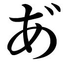

| 蜂蜜色の瞳 おいしいコーヒーのいれ方 Second Season I (集英社文庫) | |
| 村山由佳 | |
| (2009) | |
集英社ｅ文庫
蜂蜜色の瞳
おいしいコーヒーのいれ方 Second Season I
村山由佳
この本は縦書きでレイアウトされています。
また、ご覧になる機種により、表示の差が認められることがあります。
〈主な登場人物〉
和泉勝利
大学３年生。年上のいとこ、かれんとつき合っているが、彼女が転職したことから、遠距離恋愛に......。
花村かれん
介護福祉士になるため、教師をやめて鴨川の老人ホームで働いている。
星野りつ子
大学の陸上部マネージャー。勝利に想いを寄せている。
原田政志
陰でネアンデルタール人と呼ばれるほどの強面だが、世話好きのよき先輩。
森下裕恵
勝利が借りているアパートの大家の奥さん。
佐藤若菜
勝利が家庭教師をしている、原田先輩の妹。
おいしいコーヒーのいれ方 Second Season I
蜂蜜色の瞳
Open Arms
１
学食のコーヒーというやつは、どうしてこうもまずいんだろう。どう考えても、いっぺん淹れたあとの出がらしを使い回しているとしか思えない。
そう言ってみたら、向かいに座ったネアンデルタール原田と星野りつ子は、そろってイヤそうな顔をした。
原田先輩は、一日限定四十食のスペシャル定食が直前で終わってしまったのを、在学五年目のカオで（あるいはカオの怖さで？）おばちゃんから特別にもう一食、しかもたっぷりと大盛りで作ってもらったばかりだった。星野のほうはといえば、例によって、うどんとおしるこを交互に食い終わったところだ。
「そりゃ、お世辞にもおいしいコーヒーとはいえないけど、」と星野は言った。「学食で『風見鶏』ばりの味を求めようとするほうが間違ってるよ。和泉くん、足るを知るって言葉、知らないの？」
「知ってるさ」と僕は言った。「知ってはいるけど、ここまでひどい泥水にその言葉は使いたくないな」
すると先輩が、
「いちいちうるせえぞ、お前」じろりとこっちを見て宣った。「文句言うなら飲むな。飲むなら黙って飲め」
「......ハイ」
すいません、と僕は言った。まあ、ここは先輩が正しい。
文句は多々あれど、とにかく熱いことは熱いから、飲めば体を温めるくらいの役には立つ。季節はめぐり、部活で流した汗が、服に着替えている間にもう冷えるようになってきた。
いつのまにか十月が終わろうとしている。かれんと鴨川で、つまりその、何というかあの、要するに、ああいうふうになってから、二か月ほどが過ぎたことになる。
時間というものが、そのときの気分次第で伸びたり縮んだりすることはよく知っているつもりでいたが――この二か月くらい激しく伸び縮みする日々を、僕はこれまで経験したことがなかった。
＊
いとこ同士として育ってきた僕ら――僕と、かれんと、その弟の丈――が、久しぶりに再会したばかりか、いきなり三人だけで一緒に暮らすことになったのは、今からもう三年以上前。僕が高三になるまぎわの、春休みのことだ。
きっかけは、僕らの親たちそれぞれの転勤だった。
かれんと丈の両親であり、僕の死んだおふくろの妹夫婦である花村夫妻が、イギリスへ。そして僕の親父が福岡へ。
その際、親父は、勝手にさっさと決めてしまったのだった。僕を花村家で生活させることと、さらには留守宅を人に貸すことまでも。
目に入れても痛くない、可愛い一人息子を残していくのがいくら心配だったとはいえ、そんな大事な話をよくもまあこっちに相談もなく決めてくれたものだと思う。
もちろん僕は、さっぱり気乗りがしなかった。
何しろおふくろを亡くしたのが小学二年生のときで、それ以来、ずっと親父と二人きりで暮らしてきたのだ。自分のことくらい自分で出来るし、炊事も洗濯も掃除も、人並み以上にうまくこなせる。いつどこへヨメにいっても恥ずかしくないほどだ。
でも、だからこそ一度くらいは一人になってのびのび暮らしてみたかった。せっかく手のかかる親父から解放されるかと思ったのに、ろくに行き来もなかったいとこたちといきなり一つ屋根の下で暮らせだなんて、考えただけで気が重いじゃないか。
けれど、そのことで相談を持ちかけた僕に、行きつけの喫茶店『風見鶏』のマスターは、ヒゲの奥で苦笑いしながら言った。
〈まあ、そう悲観したものでもないさ。じっくりつき合ってみれば、なかなか味のある連中だぞ〉
偶然ながら、かれんと丈の姉弟をマスターもよく知っていたのだ。
もちろん後からふり返れば、マスターがあの二人を知っているのは偶然どころかむしろ必然だったわけだが、この時の僕にはまだ何もわかっていなくて――マスターが監督を務める少年野球チームの四番が丈で、その縁で知りあったかれんもやがて常連になったのだ、といった程度の話をそのまま鵜呑みにしていたのだった。
〈いいもんだぞ、家族がいるってのは。とくにお前みたいなのにとっては、何かとプラスになると思うがな〉
マスターがやけにしみじみと言うのを、ほんの少し不思議に思ったことは覚えている。
それに対して僕が、家族なんて面倒がかかるし、いればいるだけわずらわしいだけじゃないかと言ってみると、マスターは、それはお前が親父さんの世話までしてたからだろ、と笑った。
〈だがなあ、勝利。お前はもう少し、人に甘えることを覚えたほうがいい。はたから見ててもわかるが、お前は何かと人から頼られるタイプだろ。誰もがお前には悩みを打ち明けやすい。親身になって聞いてくれて、あとあとよけいな干渉はせず、しかも口が堅いとくれば、こんな理想的な相談相手はいないわな。――もちろん、それもお前のいいところのひとつだし、俺だってお前のそんなとこを気にいってる。だが、お前自身はどうだ？ 誰にも......たぶん親父さんにさえ、本気で甘えたことがない。違うか？〉
あまりにも見事に核心を言い当てられて、あのとき僕は、ただうつむくしかなかった。
グラスを磨き終わったマスターは、煙草に火をつけて言った。
〈あいつらと一緒に暮らしてみたらどうだ、勝利。そうやって、守ったり守られたりする生活を、いっぺん味わってみるといい〉
ところが。
いざ一緒に暮らし始めてみると、「守ったり」のほうはともかく、「守られたり」するなんてことはまったく、全然、少しもなかった。親父と暮らしていた頃のほうがよっぽど楽なくらいだった。少なくとも、面倒を見る相手が一人だけで済んでいたからだ。
あの春、中三になったばかりだった丈は、僕を手伝うどころか遠慮のエの字もなくて、朝はいくら起こしても起きやしないし、洗濯ものはやたらと増やすわ、部屋は散らかすわ、メシは山ほど食うわ、なのにしょっちゅう腹はへらすわで、動物園のサルより手がかかった。
おまけに紅一点のかれんはといえば、これが二十三にもなるくせに何の役にも立たないときている。
洗濯をすれば、セーターを縮ます。包丁をにぎれば、大根より先に指を切る。
あんなにぶきっちょなくせに、よくもまあ手びねりの茶碗なんかが上手に焼けるものだと不思議でしょうがなかったし、それだけトロくてポカばかりやらかしていても、なんでだかちっとも憎めないのはもっと不思議だった。
でも、それよりさらに不思議なのは――やがて僕が、五つも年上の彼女を、ひとりの女として好きになってしまったことだった。
何がきっかけなのか、いまだにわからない。
恋に必ずきっかけがあるなんて、思うほうが間違いなのかもしれない。
ただ、今からふり返って考えれば（本当にあえて考えてみればの話だけれど）、三月の終わりから一緒に暮らし始めて五月の連休明けのころにはもう、僕は彼女のことを、ただのいとこを見るのとはちょっと違う目で意識し始めていたような気がする。
〈私、今日から美術の教師をやるの。......あなたの学校で〉
そう聞かされた朝の驚きは、ちょっと忘れられない。
こんなにもあちこちヌケているこいつに教師なんか勤まるものかと思ったのだが、いざ新学期が始まってみると、彼女はあっというまに学校の人気者になっていった。見た目は何しろ儚げな美人だったから、男子たちが色めき立つのはわかるが、女子からも慕われていたところを見ると、人気はほんものだったんだろう。かれんの授業はいっぷう変わっていて、楽しくて、生徒たちにはとてもウケがよかった。
いまだに覚えているのは、美術室の窓ぎわの椅子に腰をおろしたかれんと、その向こう側にひろがるいらかの波。そして、あちこちで風をはらんではためくこいのぼりだ。
たしかに眠たい午後ではあった。だけどそれにしたって、生徒ならばまだしも教師が授業中に居眠りするというのはどうよ、と思う。
結局それが教頭にバレてしまい、さんざんしぼられたかれんを学校帰りに『風見鶏』に誘ったあの時が、そう、きっかけと言えばきっかけだったのかもしれない。かれんが何か悩みを抱えているらしいことに、僕が気づいたのはあの日が最初だったから。そしてもちろん、そんな彼女を守ってやりたいと――他の誰でもない、この僕が守ってやりたいと思い始めたのも、あれが最初だったのだから。
誰かの秘密を知りたいと願うとき、人はたいてい、その秘密の重さを受けとめるだけの心構えをまだ持っていない。いつだって、必要充分な覚悟よりも、ただやみくもな好奇心のほうが先に立ってしまう。
しばらく後になって、かれんからすべてを知らされた僕もそうだった。
どうして彼女が、いくら陶芸用の土を採るためとはいえ、あんなにも足繁く房総の鴨川へ通っていたのか。どうして『風見鶏』のマスターがかれんを見る時、あんなにも優しい目をするのか。
そして何より、どうして花村家には、三歳より前のかれんを写した写真が一枚も残っていないのか......。
そう――じつはかれんは、僕のいとこではなかったのだった。ということはもちろん、丈の姉でもないのだった。
かれんの本当の両親は、彼女がまだ三つになるかならないかの頃に、自動車事故で亡くなった。路肩に車をとめて地図を見ていたところへ、対向車線から居眠り運転のダンプが突っ込んできたのだ。
ボンネットも運転席も完全にひしゃげるほどの大事故だったのに、助手席の母親の膝にいたかれんは無事だった。
〈お母さんが抱きかかえるみたいにして、その胸とダッシュボードとの間で、奇跡的に無傷だったそうよ〉
鴨川の、海辺近くの松林を歩きながら、かれんは少しずつ僕に話してくれた。
〈でも、この先まだまだ手のかかるような小さい子を、自分の家に引き取れるほど余裕のある親戚はなかったみたいね。それで、花村の両親が申し出て私を引き取ったってわけ。丈が生まれる前の話だけど、いくら大学時代から世話になってた先輩の遺児だからって、めずらしいわよねえ。あのひとたちのお人好しは、ほんと、昔から変わっていないらしいわ。......おかげで私、あの家でほんとうに幸せだった。いくら感謝しても足りないくらい〉
そんなふうに言った時の彼女の、寂しげな微笑を覚えている。
松林は、とある老人ホームの庭先から砂浜まで続いていて、そしてそのホームには、かれんの本当のおばあちゃんが暮らしていた。僕は、休みの日に黙ってかれんの後をつけていくことで、半ば無理やりそれを知ってしまったのだ。
かれん自身がおばあちゃんの存在を知ったのは、大学のボランティア・サークルの活動でこの老人ホームを訪れた時のことだった。どうしてそれがわかったかといえば、すっかりぼけてしまったおばあちゃんが、かれんを見るなり自分の娘と間違えて〈セツコ〉と呼んだからだった。亡くなった母親のその名前だけは、幼かったかれんの耳の底にはっきり残っていたのだ。父親がくり返し呼ぶ、その声とともに。
〈これからだって、何をどう変えたいというのではないのよ。ただ......血のつながってる人と話がしたいだけ。今までほうっておいたおばあちゃんに、もっともっとあんなふうに笑ってもらいたいだけなの〉
血のつながっている人。
かれんにとって、じつはそれは、おばあちゃんだけではない。もう一人だけいる。
要するに、それこそ――『風見鶏』のマスターが、かれんのことをあんなにも愛しげに見つめる理由なのだった。
恋とは、するものじゃなくて落ちるものだという言葉がある。
もっともだと、僕も思う。自分の意思なんかでコントロールできるもののことを、恋とは呼ばないんじゃないかとさえ思う。
僕の場合、かれんに告白してから（というか、なし崩しに気持ちがバレてしまってから）実際に想いが通じるまでには、七か月以上の月日が必要だった。
七か月といえば、ざっと計算しても二百十日以上だ。
ということはつまり五千時間以上ってことだし、分に直せば三十万分以上ってことで、もっと言うなら、千八百万秒以上ということになる。よくぞあきらめずに耐え抜いたと、自分をほめてやりたい。
経験したことのない人にはなかなかわかってもらえないかもしれないが、同じ家に住んでいる相手に片思いをし続けるというのは、想像以上にしんどいものだ。一緒に過ごせる一分一秒はもちろん嬉しいけれど、同時にそれは、受けいれてもらえない一分一秒の積み重ねでもあるわけだから。
でも、だからといって僕は、かれんのことを急かす気持ちには一度もならなかった。彼女だって何も、わざと僕をじらしていたわけじゃない。彼女が僕の気持ちを受けいれてくれるのにそれだけの時間がかかったのにはちゃんと理由があって、それは、彼女のほうもまた、一人の相手をなかなか思いきれずにいたからだった。
〈好きだったの、私。マスターのことが〉
鴨川のホームでおばあちゃんと別れたあと、かれんは、砂浜に並んで座った僕にようやく打ち明けた。僕のほうは見ずに、視線はまっすぐ水平線へと向けたままだった。おまけに、ちょっと前までぼろぼろ泣いていたせいで、まだ鼻声だった。
〈ずっと前からよ。兄妹だってことがわかるずっと前から。でも、マスターのほうはそれよりももっと昔から、私のことを妹だって知ってた。お店を開くのにあの街を選んだのも、野球チームに丈を誘いにわざわざ家まで来たのも、もとはと言えば花村の家と親しくして、私をそれとなく見守るためだったの。......おばあちゃんに会いました、って......初めて私がそう言ったとき、マスター、ものすごく嬉しそうな顔したわ。自分からは兄だと名乗るまいって決めてたそうよ。事故があったのは、私が三つで、彼が十三のときだった。年のはなれた小さい妹がどんなに可愛かったか、どんなに自分になついていたか......目を細めて話してくれたわ〉
そうしてかれんは、その日のことを誰にも言わないでほしいと僕に言った。
僕がそれを約束すると、彼女はもうひとつ頼みごとをした。
〈これを最後にするから......思いっきり、ここで泣いてもいい？〉
それはまるで、迷子の子どもみたいな泣き方だった。僕の首っ玉に抱きついて、わんわん泣いて、泣いて、泣いて――。
だから僕は、柄にもなく慰める羽目になったのだ。
〈心配するなよ。今これだけつらい思いをしておけば、これから先はきっと、いいことばっかりだから。......お前がマスターを好きになったのは、偶然なんかじゃない。血のつながりが呼んだんだ。その懐かしさを、お前はきっと、恋だと勘違いしたんだ。いいじゃないか。恋人同士なら別れることもあるだろうけど、きょうだいは一生きょうだいなんだぜ〉
おかしなものだ。
こうして思い返すと、なんだか僕は、あの頃のほうがずっと大人だったような気がする。言い換えると、無理なくかれんの保護者でいられたような気がする。
でも、あんなにふわふわと頼りなかったかれんは、いつの頃からか僕をあてにすることをやめ、自分のことは自分でしようと努力するようになって、今ではもうずいぶんとしっかりしてしまった。それこそ、「守られる」どころか、いつのまにか僕よりもはるかに先を歩くようになった。
人生の目標を見つけた人というのは、あんなにもはっきりと見事に、足取りが確かになるものなのかと思う。
恋人として、彼女の成長を喜ばなくてはならないのはわかっている。まだ目標なんて見いだせない今の自分が、人として彼女の足もとにも及ばないからといって、その足を引っぱるような真似をしてはいけないことだってわかっている。
だから――そう、今までこんなことをかれんに向かって言ったことはない、誓って一度もないけれど、ほんとうの本音を、ここでだけ正直に言わせてもらうならば――僕は時々、見るからに保護者を必要としていたあの頃の頼りないかれんを、ひどく懐かしく思うときがある。たいていは、僕自身が何かに凹んだり傷ついたりしてものすごく疲れているときだ。
面倒見がいいとか、父性愛が強いとか言えば聞こえはいいが、誰かから必要とされることでしか自分の立ち位置を確かめられないというのはやっぱり情けなくて、それを情けないと思えば思うほど、僕は焦りを覚えた。五つという年の差があるからこそよけいに、かれんから頼りにしてもらえる男でありたいのに、今のこの現実ときたら......。
そんなふうに、焦りの虫に取り憑かれそうになるたびに、僕は目をつぶり、深呼吸をした。そうして、かれんの言葉と声を思い起こそうとした。温かくて豊かな、まるで歌うような話し方のアルトをだ。
〈ねえ、ショーリ〉
僕のことをそう呼ぶのは、今ではもうこの世でただ一人、彼女だけだ。
〈私ね。これから先もずーっとショーリと一緒にいたいし、ショーリに私のことずーっと好きでいてもらいたいの〉
その話をしたのは、親父が福岡に借りたマンションでだった。話せばややこしいことながら、いろいろと仰天の事情があって、僕らは新幹線で福岡まで出かけていくことになったのだ。
親父が僕に鍵を渡して出勤していき、二人きりで残された部屋での、それまででいちばん長いキスのあと――かれんは、僕の腕の中でそっと言葉を継いだ。
〈私、ショーリがいないと何もできないような人間にはなりたくないの。もちろんショーリにも、私を守ることしか頭にないような人になってほしくないの。二人のうちどちらか片方でも、自分一人で立ってられないような人間だったら、そんなの、恋愛じゃないでしょ？ 弱い人が、気持ちいいからって麻薬に頼るのとおんなじで、ただの甘えになっちゃうでしょ？ 成長するどころか、どんどんダメになっていっちゃうでしょ？〉
僕が、もっともっと甘えてほしいし甘やかしたい、と言ったことへの、それがかれんの答えだった。
必ずしも耳に優しいことばかりではない。
それでも、これまで彼女が手渡してくれた言葉の一つひとつは、折にふれて僕を支えたり、慰めたり、強くしたり、正気に立ち戻らせたりしてくれた。
『風見鶏』のマスターが、僕にとって目印としての北極星だとするならば、かれんの言葉は方角を示してくれる羅針盤だった。あるいは、目標にたどりつく道を見失わないでいるための地図だった。
もちろん、言葉、だけじゃない。思い出だってそうだ。
高校卒業まぎわの三月、女神像のそびえる展望台でかわした、初めてのキス。ふるえるかれんの唇が、海風のせいで少しだけしょっぱかったこと。
四月の桜の盛り、ワイン一杯で酔っぱらったかれんが、僕の目の前でさっさとドレスを脱いで、下着姿になってしまったこと。あわをくって止めたはずみで、ベッドの上で抱き合う形になった僕に、あのとき彼女はふわりと笑ってこう言ったのだった。
〈ずうっと、そばにいて〉
思いだすと、いまだに胸がきゅうっと鳴く。
大学で知りあった星野りつ子を、佐恵子おばさんが勝手に僕の彼女だと思いこんだ七月の夜。誤解を解こうとかれんを探しに行って、ひよこ公園の滑り台のてっぺんでかわしたこれまでより少し深いキスのこと。
そして八月、久しぶりに二人きりで鴨川の海へ出かけた帰り、外房線の線路が台風のあとの土砂崩れで埋まってしまったこと......。
〈今日は、鴨川にいない？〉
かれんにそう言われた時の衝撃は、あれは正直、半端じゃなかった。結局、同じ部屋で一晩過ごしても何もなかったわけだけれど......というか途中で情けなくも未遂に終わってしまったのだけれど、でも、そのことこそが僕らを、もっと強く結びつけてくれたんじゃないかとは思う。体をつなげることが、必ずしも心をつなげることにはならないと気づいたのは、この時が最初だった気がする。
そうこうするうちに、親父は再婚することになり、しかも子どもまで生まれることになった。僕が親父に、かれんとつき合っていることを告げたのもこの頃だった。ずっと陰ながら（半ば面白がりながら）応援してくれていた丈と、最初から知っていたマスターを別にすれば、身内でそのことを打ち明けたのは親父が初めてだった。
十一月には西高の文化祭があって。
僕が、英語教師の中沢氏にむちゃくちゃ焼きもちをやいて。
その気分をどこかで引きずったまま迎えた十二月、僕とかれんはクリスマスイヴの夜に初めての深刻な大げんかをした。それだってやっぱり、僕のばかばかしい嫉妬が原因だった。
マスターの恋人の由里子さんに前もって頼んで、せっかくオリジナルで作ってもらった指輪のプレゼントすら渡せないまま、当初の予定どおりみんなと出かけたスキー旅行。
ただでさえ目も合わせられないくらい気まずかったのに、そんなときに限って星野りつ子が僕のことを好きだと告白してきて、断った僕に、彼女がやけを起こしたようにキスを仕掛けてきて......それをたまたま目撃してしまったかれんは、スキーから戻るなり、とうとう大晦日まで家に帰ってこなかった。後で聞けば鴨川のおばあちゃんのところで過ごしたそうだが、連絡の取れない三日間は生きた心地がしなかった。
いや、言われなくたってわかっている。自業自得というのだ、こういうのを。
〈かれん、俺さ......〉
気を利かせた丈が初詣に出かけたあと、ようやくかれんと二人きりになれた僕は、思いきって、これまで言えなかった本音を正直に口に出した。
〈俺、怖かったんだ。中沢氏に限らず、いつか誰かがお前のこと奪っていくかもしれないって考えたら、怖くてたまらなかったんだ。お前みたいな女が、俺なんかで満足してるのが信じられなくて、どんな言葉でもいいから、確かに信じられるものが欲しくなって、証拠とか、この先の保証とか......でも、お前の言葉だけじゃ安心できなくて......だって、今はそうでも人の気持ちって変わるかもしれないだろう？ それで、あんなふうにいらいらしてばっかりいたんだ。バカだよな、ほんとに。先のことばっか考えて、今を大事にするのを忘れちまうなんてさ〉
そうして、聞いてくれているのかいないのか、向こうをむいたままの彼女に心の底から謝った。
〈ごめんな。イヤな思いばっかさせて、悪かったと思ってる。ほんとに、ごめん。でも俺......どうしてもお前でなくちゃ駄目なんだって、星野にはちゃんと言ったから。悪いけどあきらめてくれって、はっきり言ったから。そりゃ、お前がもう俺なんかじゃいやだって言うなら、どうしようもないけど......〉
あの時も、かれんはやっぱり泣き虫だった。一年半以上も前に、春の海辺でマスターを思いきるために泣いた時と同じように、僕にしがみつくようにして本格的に泣いた。
そして、すすりあげ、咳き込み、泣きじゃくりながら言ってくれたのだ。
〈や、だ......。ショー、リでなくちゃ、やだ。ほかのひと、じゃやだ。どこへも、行っちゃ、やだ〉
そういえば、丈のやつは、出かけていくまぎわに僕をそばへ呼んで言ったのだ。帰ってきたとき勝利が自分のベッドで寝てなくたって、オレなんにも言わないから、と。
それにはさすがに、ばかたれ、と返したものの――あの晩かれんを抱くことをどうして思いとどまれたのか、自分でも不思議でしょうがない。それくらい、泣きじゃくるかれんが恋しくて、愛しくて、心臓がちぎれそうだった。
さっきも言ったとおり、実際にかれんと初めて結ばれたのは、今からほんの二か月ほど前のことだ。つまり、あの雪の大晦日からさらに一年半以上もの間、僕と彼女はいわゆる「清らかな関係」だったことになる。
考えてみればその言葉自体、おかしな話だ。結婚前に体を重ねたことが有るか無いかだけで、どうして清いとか清くないとか決めつけられなきゃいけないんだろう。世の中には、体をつないだことがなくても汚らしい関係だってあるだろうし、もちろんその逆だってあるはずなのに。
だからというわけではないけれど、僕らが「その先」に進むのをためらっていたのは決して、世間がどうとか、親の目がどうとか、そんなことを気にしたせいではなかった。ついでに言えば、場所だってなかったわけじゃない。花村のおじさんと佐恵子おばさんがイギリスから帰国したのをきっかけに、僕はアパートを借りて一人暮らしをするようになっていたから、もしも本当にかれんを抱こうと思ったら、できないわけではなかった。機会だって何度もあった。
要するに、かれんにも、そして僕自身にも、まだ時が満ちていなかったというだけの話なんだと思う。
僕らが晴れてそうなるまでには、まだまだいやというほど浮き沈みがあった。人間関係の面でも、僕という個人の内面でも、ほんとうにいろいろ。
つまらない焼きもちからかれんを傷つけたことを、あれほど後悔し反省したにもかかわらず、それから後も僕はやっぱり自分の嫉妬心や猜疑心をうまくねじ伏せることができなくて、何度も何度も彼女を泣かせた。
そして、自分の内側のドロドロにかまけて周りが見えなくなるあまり、『風見鶏』のバイト中に三度、同じ種類の失敗をやらかした。二度目にマスターから厳しい注意を受けていたというのに、よりによって三度目には、大事な常連客にふぬけた味のコーヒーを出してしまったのだ。
――クビ。
はっきりそう言われたわけではなかったにせよ、『風見鶏』のカウンター内に出入り禁止の宣告を受けるということは、僕にとっては同じ意味だった。
挽回のチャンスは、まだもらえていない。今はいわば、外に修行に出されている身だ。
その間にも、かれんは自分で自分のことをちゃんと考えていた。誰にも、そう、マスターにさえも相談せずに考えて、考えて、ついには光が丘西高の美術教師をやめ、介護福祉士の資格をとるために鴨川のおばあちゃんのいる老人ホームで働くことを自分で決めた。花村の両親を説得する上で、出生の秘密をとっくに知っていたということまで打ち明け、きちんとけじめをつけての単身移住だった。
そんな彼女を、僕が喜んで送り出してやれたと言えば、思いっきり嘘になる。そうしてやりたい気持ちはあったのに、途中までは懸命に努力だってしたのに、最後にはやっぱり自分のわがままや鬱屈をぶつけて、彼女を傷つけずにいられなかった。
かれんが向こうに行ってしまってからもそうだ。無理がたたって、過労で倒れたかれんを見舞いにいったはずが、そこに中沢氏の姿を見たことで逆上し、病み上がりの彼女を責めるだけ責めて......。
こうしてあらためて考えれば考えるほど、自分があまりにも最低でいやになる。かれんに見放されないのが、いっそ不思議なくらいだ。
それなのに、かれんはあの夜――あの鴨川での夏祭りの夜、まどろみかけた僕に言ってくれたのだった。
〈私......花村の家の娘になれて、よかった。......ショーリと会えて......よかった〉
あの言葉に報いるだけのことを、僕はまだ、何一つかれんにしてやれていない。
ただ僕は、このふた月、なんとか暇を見つけてはかれんに逢いに行った。実際には逢いたくても逢いに行けないことが多くて、そういう時は頭の中が彼女の面影でぱんぱんにふくれあがり、歩くのにもふらふらするくらいだった。
半日でもぽっかり時間があくと、今から鴨川まで行って帰ってこられるかどうかを考えてしまう。電車代は片道三千数百円と馬鹿にならないのに、そんなことは気にもならなかった。というか、気にしている余裕なんてなかった。まるで往復の運賃のためだけにバイトしているみたいだったけれど、それさえも、かえって目的があることが（というか目的がそれであることが）嬉しく感じられるだけの話だった。
授業を受けていても、ゼミのレポートと格闘していても、それどころか部活中にスタートポジションから遠くの踏み切り板をにらみつけている時でさえ、ふっと彼女の白い横顔が脳裏をよぎる瞬間がある。
そのたびに僕は、気持ちだけじゃなく、別のところまでが熱くなるのをこらえなければならなかった。
そういう感覚は決してこれが初めてというわけではなかったものの、前よりも明らかに具体性を帯びていて、そのぶん、抑えこむのにたいへんな努力が必要だった。
以前は頭の中だけの妄想でしかなかったもの――つまり、かれんの体の柔らかさや、重ねあった素肌の熱さや、特別なとき限定の、胴震いするくらい色っぽい声や、仕草や、表情や......そういったものすべてを、僕はもう現実に自分のものにしてしまったのだ。
いったん体に刻まれたものを忘れるのは難しい。
いったん得たものから手を放すのは、もっと難しい。
こういうのは、僕ら堪え性のない男だけの現象なんだろうか。女たちは、こういうことで悶々としたりしないんだろうか......。
＊
「〜〜〜」
と、いきなり星野が出したヘンな声に、僕は思わず飛びあがった。
意識がすっかり別の方角へと飛んでしまっていたせいで、自分が今どこにいるのか一瞬わからなくなる。テーブルの上で、例の泥水コーヒーがすっかり冷めていた。
「なんだよ急に」
「どした？」
ネアンデルタールと僕が同時に覗きこむと、彼女は膝の上でひらいていた雑誌のページを指さした。
「んも、最っ低、今月の星占い。全体運も仕事運も恋愛運も、そろってドツボ」
「仕事運ってお前、仕事なんかしてねえじゃねえか」
と先輩が言う。
「あ、失礼な。レンタルビデオ屋のバイトは仕事のうちに入らないとでも言うんですか？」
「いや、そういうわけじゃねえけどさ」
情けなくもたじたじの先輩からツンと顔をそむけてみせたものの、星野は、すぐに肩を落として深いため息をついた。
「女の子って、そういうの好きだなあ」と、僕は言ってみた。「わりと当たったりするわけ？ 星占いって」
「当たるかどうかの問題じゃないもの」
「え、なんだよ」ちょっとびっくりして、僕は言った。「当たらなくていいなら、気にする必要もないじゃないか」
「そういうことじゃなくて......なんかこう、いいことが書いてあると元気が出るじゃない。悪いことが書いてあっても、そこだけ気をつければうまくいきそうな気になるじゃない。けど、何から何までこうも悪いことばっかりだと、やる気がしぼんじゃうっていうか、投げやりになるっていうかさ」
「じゃあ、いっそ読まなきゃいいんじゃねえ？」
今回もまたじつに正しいことを言ったはずの先輩が、星野に無言でにらまれてシュンとなる。
一時期、ずいぶん痩せていた星野りつ子も、今ではだいぶ回復してきて、一人でもどうにか少しずつものが食べられるようになってきたらしい。
自分で言うと自惚れているように聞こえて嫌なのだけれど、でも、星野がものを食べられなくなった原因はやはり、どう考えても僕だった。僕のことを好きだという気持ちを抑えきれずに、時にかれんに嫉妬しながらも何とかしてあきらめようともがく星野を見ていると――僕は、ひとつ間違えば自分が同じような立場だったかもしれないと思えて、どうしても冷たく突き放すことができなかった。
事情を知った原田先輩までが、積極的に星野の食事につき合ってくれるようになったのはありがたかったが、相変わらず彼女はやせっぽちだ。何かと強がるところがなおさら痛々しくて、でも僕は、そのことにはできるだけ気づかないふりをする。
「それで、星野は何座なの？」
と振ってみた僕に、彼女はぶっきらぼうに答えた。
「双子座」
「へえ。先輩は？」
「俺かあ？ ......乙女座」
「.........」
星野の向けた氷点下のまなざしにもめげず、先輩はくり返した。
「いや、だから、乙女座」
「いいですって、そういうギャグは」
「や、ほんとなんだっつの。ほんとに乙女座」
はたして、本当だった。八月三十日生まれの原田先輩は、何度確かめようと乙女座以外の何ものでもないのだった。ネアンデルタール原田が、乙女座。顔が台形の原始人が、乙女座。全国の乙女座の皆々様から怒濤のブーイングを賜りそうな話だが、それが事実なのだからしょうがない。
「八月の三十日っつったらよう」と、先輩はちょっと悔しそうに言った。「毎年、夏休みの宿題が超クライマックスって時でよう。友だちが集まっても、ノートの写しっこに必死で、祝ってもらうどころの騒ぎじゃなかったんだよな」
「そうじゃなければみんなに祝ってもらえたとでも？」
「まあまあ、そうとんがらずにさ」と星野をなだめ、僕は横から乙女座の運勢とやらを覗き見た。「ああ、先輩。けっこういいっすよ、全体運」
「ンなのはどうでもいいんだよ。恋愛運はどうよ、恋愛運は」
うわぁ、そこ気にするんだぁ、という星野のつぶやきはとりあえずスルーして、
「星三個です」
「おっ、いい感じじゃねえか。最高は幾つだよ」
「星十個です」
「.........」
どっぷり暗くなった原始人を慰めようと、僕は急いでその下を読みあげてやった。
「『今月の乙女座のラッキーアイテムは、ブルー系のレースの下着。半身浴で、心身ともにリラックスしましょう。ラベンダーの入浴剤が吉』」
「ブルー系のレースかあ」
「やだもう、想像させないで下さいよ」と星野が冷たく言い放った。「だいたいこれ、女性誌だし」
「ふうむ。レースねえ」
「だからやめて下さいってば。――和泉くんは、天秤座だよね」
「あれ、よく知ってるね」
思わず言うと、今度は原田先輩が冷たい目を向けてきた。口だけが、（アホかお前）の形に動く。
「あ、うん。そう、天秤座」慌てて取り繕った。「なんかいいこと書いてある？」
「和泉くんも、全体運はまあまあみたいだよ」と、星野は淡々と言った。「ただ――」
「うん？」
「『物事が、すべて裏目裏目に出る時期です。とくに女同士のトラブルに注意』だってさ。......恋愛運はね、星六つ」
「へえ。ラッキーアイテムは？」
「『エロカワ系のキャミソールをラブリーに着こなすと吉。おニューのマスカラで目力をアップさせましょう。仕上げにリップグロスでつやつや唇をアピールして』」
「......どうしろっていうんだよ、この俺に」
向かいでげらげら笑っている原始人を見やって、それまでちょっと不機嫌そうだった星野も、とうとうプッと噴きだした。
「だから言ったじゃない、これ女性誌だって。だいたい、恋人のいる人が恋愛運を気にするなんてイヤミだよ。ねえ先輩？」
「ああ、まったくだぜ」
「いや、そうは言うけどさ、いればいたでいろいろと悩みがあるんだよ」
一応まじめに抗議してみたのだが、
「何それ。ますますイヤミ」
もうさっそく、〈裏目裏目に出て〉しまった。
「悩みが聞いてあきれちゃうよ。このごろなんて、かれんさんと露骨にラブラブのくせしてさ」
「ラブラブって......」
「なによ」
「いや――なんでも、ない、けど」
こっそりとため息をつく。
ラブラブならラブラブで、いろいろと悩みがあるんだよ。
思いっきりそう言いたい気分だったけれど、たぶん、言わなくて正解だったんだろう。
＊
あの朝――。あの夏祭りの夜の、あくる朝。
明けがた、先にふっと目が覚めたのは僕のほうで、その時かれんはむこうを向いてぐっすり眠っていた。
僕が背中の側からそっと体を重ね合わせていたら、もぞもぞと身じろぎして寝返りをうち、例によってまた意味不明の寝言をつぶやいて、まるで猫が甘えるみたいな仕草でふところにもぐりこんできたけれど、少なくとも当分のあいだ目を覚ます気配はなかった。
くぅ、と引き続き寝息をたてはじめた彼女を、僕はそっと抱き寄せた。よっぽど疲れ果てているんだろうなと思い、その原因を作ったのが自分であることに思い至ったら一気にスタンバイＯＫになりかけたものの、僕にしたってあのときは眠気のほうがまさっていて、再び背中から落ちるようにすうっと寝入ってしまった。
次に目が覚めた時にはなんと、すでに昼をまわっていて、隣はもぬけの殻だった。
あわてて夏掛けをはねのけ、ジーンズをはくのももどかしく蚊帳をくぐって起き出していくと、かれんは台所の流しの前に立って味噌汁を作っているところだった。
大根か何かを刻む手つきは以前よりだいぶこなれてきていたけれど、その背中の一生懸命さはやっぱり相変わらずで、へたに驚かせたら指でも切るんじゃないかと心配で声をかけそびれていたら、気配に気づいた彼女が手を止めてふり返った。
「あ、おはよ、ショーリ」
みるみる目もとをほころばせて、かれんは言った。
「もう少ししたら、起こしにいこうと思ってたの」
ゆうべの今朝だというのに、あんまり照れた様子がない。
これは少し意外だった。もしかして顔もまともに見てくれないんじゃないかと思っていたくらいだったのだ。
僕は、テーブルをまわってかれんに近づいた。
彼女が初めてうろたえたように一歩下がる。
「あ、あの......」
いきなり声がちっちゃくなる。
「危ないわよ、包丁」
「置けばいい」
「で、でも......」
さらにちっちゃくなる。
「でも、なに」
「う......上に」
「え？」
「せめて、上に、何か、着て？」
ここまでくるともう、消え入るような声だった。つまりは、僕のよく知っているかれんだった。
答えずに、かれんの手から注意深く包丁を奪い取り、大根の千切りがまだ途中の俎板にそっと置く。
それから僕は、かれんの体に腕をまわして抱き寄せた。彼女の手が、僕の背中のうしろでうろうろと迷っているのがわかった。たぶん、大根の汁や何かで濡れているのを気にしているんだろう。
かまわずにぎゅっと抱きしめてキスをすると、やがて、よけいなことを思いやっている余裕のなくなった彼女の冷たい指先が、おずおずと背中に触れてきた。キスを深くするにつれて、まるですがりつくように僕の肩胛骨のあたりを握りしめてくる。
――愛しかった。
ゆうべ初めてかれんと一つになったあの瞬間、津波のように押し寄せて僕を飲みこんだあの激しすぎる愛しさ......それが、こんどは体の奥底からこみあげてくるのを感じて、僕は唇をほどき、頬と頬とを押しあてるようにしてますますきつく彼女を抱きしめた。
「なあ」
と、耳もとにささやく。
「――ん？」
「......だめ？」
「え？」
「だからその......だめかな」
「なにが？」
「つまり――もう一度、ってこと」
かれんの体が、かっと火照るのがわかった。
「なんか、デリカシーのない訊き方でごめん。けど俺、」
「ううん」かれんが慌てたように首を振る。「そ、それはいいの。ただ......でも、あのね、正直なこと、言ってもいい？」
「もちろん」
「......ちょっと、つらいの」
「え？」
「その、つまり――からだがね。ちょっと......」
「あ......！ ご、ごめん！」
あわをくって顔を覗きこもうとすると、かれんは恥ずかしがってうつむき、僕の胸に頭のてっぺんをコツンと押しつけてきた。
「ごめんな」
と、僕はもう一度言った。
「女のひとの体って、俺、よくわかってなくて」
「ん......いいの。よくわかってたら、それはそれでいやだし」
「や、そういう問題じゃなくてさ、」
「そんなに心配そうな顔しないで。ふつうのことなんだから」
「そうかもしれないけど、でもさ、」
「大丈夫だから。――ただ、ごめんね、今日はもう、ちょっと無理みたい」
「うん。......俺のほうこそごめん」
「今日も、夕方から、遅番で出なくちゃいけないし」
「わかってる。ほんと、ごめんな」
かれんが、うつむいたままかぶりを振る。
「――ねえ」
「うん？」
「怒って、ない？」
「なんで俺が怒るんだよ」と僕はあきれて言った。「お前が怒れよ」
「どうして？」
「どうしてって、」
「うんと待たせちゃったのに？」
「......え？」
「ショーリ、ずうっと私のこと待っててくれたのに......私の心の準備ができるの、ほんとにずっと待っててくれたのに」
「そんなの、当たり前のことじゃんか」
言いながら、なんだか胸が苦しくてたまらなかった。
「っていうか、お前のことが大事だからそうしただけっていうかさ」
やっぱりうつむいたままのかれんが、ふっと微笑む気配がした。
「ねえ、ショーリ」
「うん？」
「この期に及んで、もったいつけてるとか、思わないでね。おねがい」
「ばか、思うわけないだろ、そんなこと」
とうとうたまらなくなって、僕はもう一度かれんを抱き寄せた。彼女も、こんどはためらうことなく僕の背中を抱きしめ返してくる。
僕らはそのまま、台所にさしこむ晩夏の日ざしのなかで、しばらくじっと抱き合っていた。胸のうちに満ちてきたのは、少し前までの、きりきりと揉みこむような愛しさとはまた少しちがう感情だった。
もっと、穏やかで。
熱いというよりは、じんわりと温かくて。
守ってやりたいと思った。いま彼女の体をつらくさせているのは他ならぬ僕なのに、いや、それが僕だからこそ、せめて、ほかのあらゆる痛みやつらさから彼女を守ってやりたいと、ただそれだけを思った。
その日の午後のほとんどを、僕らはゆっくりと抱き合って過ごした。そうして、たくさんの言葉と、たくさんのキスを交わした。ほかにしたことといったらせいぜい、庭先で火鉢を洗って井戸水を張り、金魚を放してやったくらいだった。
やがて、かれんがホームに出勤する時間が迫ってくると、僕は彼女を送りがてら一緒に出かけ、駅前で手を振り合って別れると、帰りの列車に乗りこんだ。僕もまた、今夜じゅうにレポートを書かなくてはならないのだった。
再び離ればなれになろうというのに、気持ちは嘘のように落ち着いていた。まるで、窓の外に広がるベタ凪の海のようだった。
いつかまたそう遠くないうちに、僕はかれんを抱くだろう。そのときも、もしかすると彼女は少しつらい思いをしてしまうのかもしれない。
でも、それを思うと僕は正直、嬉しかった。ひどい話に聞こえるかもしれないけれど、それが掛け値なしの本心だからしょうがない。
自分だけがかれんに与えられる痛み――。それこそがまるで、かれんと僕との間をつなぐ特別な絆そのもののように思えたのだ。
もちろん、この時点の僕は、想像もしていなかったのだった。
まさかそのあと、今にいたるまで、二か月にもわたって再びの禁欲生活を余儀なくされようだなんて。
２
「ねえ先生。エッチってあれ、けっこう問題あるよね」
例によっていきなり若菜ちゃんがそう宣ったのは、これも例によって家庭教師のバイトの休み時間で、僕がモンブランのてっぺんにのった栗を今まさに口に入れようとしている時だった。
お約束のようにポトリと膝に落ちてしまった栗をつまみあげ、
「頼むからさ」
僕はため息をついて言った。
「そういう話題を持ち出すときは、できれば先に、『これから持ち出すよ』って前置きしてくれないかな」
「『これから持ち出すよ』」
思いきり棒読みでそう言うと、若菜ちゃんは構わずどんどん先を続けた。
「だってさぁ、先生もそう思わない？」
「いや、急にそこだけ言われても」
「なんで男ってさ、あんなに先ばっか急ぐんだろ。せっかちっていうか、自分勝手っていうかさあ」
っとにもう、あったま来ちゃうよ、と口を尖らせてつぶやく。
なんというかこれは、出だしから分が悪い。僕の乏しい経験から言わせてもらえば、女の子の口から「男って」という言葉が出たときは、たとえそれが自分に非のないことであろうと、反撃しようだなんてよもや考えてはいけない。武器という武器はぜんぶ捨て、両手を頭上にあげ、できるだけ従順な顔を装って、嵐が過ぎてくれるのをひたすら待つよりほかどうしようもないのだ。
「なに黙ってんの？ 先生」
「あ、いや......ええと、つまりそれは、いま若菜ちゃんのつき合ってる彼が、若菜ちゃんのペースを無視してコトを運ぼうとするってこと？」
「だからそう言ってるじゃない。ていうか、あたしんとこだけじゃないよ。友だちもみんなそう言ってるよ」
「みんなって......そんなにみんな、経験あるわけ？」
まだ高校一年だぞ、高校一年。こっちなんか自慢じゃないけどつい二か月前だったんだぞ、と内心くらくらしながら聞き返したのだが、
「そういうわけじゃないけどぉ」
若菜ちゃんは眉を寄せた。
「うー......だからぁ、んもう、わかってよ。とりあえず経験のある子はみんな同じようなことで悩んでるって意味で言ってんの！ 細かいとこでいちいち引っかからないでよね、話が進まないじゃん」
「ごめん」
「先生のときとは時代が違うんだから。今はもう、こんくらい普通なのっ」
僕が高校一年生だったのはたった数年前のことなのだが、「時代」まで持ち出されてしまっては抵抗のしようもない。
はいはい、わかりましたよ、と白旗を掲げた僕をにらんで、若菜ちゃんはしばらくほっぺたをふくらませていたが、やがて、ふうっとため息をついて言った。
「べつにさ、一方的にあっちのせいにするつもりはないんだよ？ あたしだって、いやなのを我慢してつき合ってるってわけじゃないんだし。ただ......」
「ただ？」
「もうちょっとさ、普通にいろいろしゃべったり、一緒に音楽聴いたり、映画とか観たり、してくれてもいいと思うんだ。だって前はさ......そういうふうになる前は、いっぱいそういうこと一緒にして、それだけでもお互いすごく楽しかったのにさ。今は、なんか違うんだもん」
「違う、っていうのは？」
「だから......二人きりになるとどうしてもすぐそっちの方向へ流れちゃうっていうか。ろくに話もしないでいきなりキスとかされてもさあ......なんかこう、『あたしの体だけが目当てなのね！ 』って」
ぶふっ！ と紅茶を噴いてしまった。
ゲッホゲッホと派手にむせる僕にティッシュを箱ごとよこしながら、若菜ちゃんがあきれた様子で肩をすくめる。
「先生もほんと、進歩がないよねえ」
「......すいませんね」
半ばヤケで言いながら、テーブルにこぼれた紅茶を拭く。
しかし、ふむ――。前は普通にしゃべったり、一緒に音楽聴いたり、か。過去の自分を考えてみるにつけ、ほんの少しだが、身に覚えが無くもなくてちょっと焦る。
「で、それで？」
最後に口のまわりを拭き終わってから、どうにか気を取り直して訊いてみた。
「そういうのはイヤだって、ちゃんと彼に言ってみた？」
「言ったけど、あんまりわかってくれなかったみたい」
苦笑いを浮かべて、若菜ちゃんは言った。
「っていうか、あっちが言うにはさ、好きなんだから、そばにいればそういうふうにしたくなるのは当たり前だっていうんだよね。映画観たり音楽聴いたりは他の友だちとだって出来るけど、こういうことしたくなるのは好きな相手とだけなんだから、それでいいじゃないかって」
「ふう......む」
「なんかさ、一応、筋は通ってるように聞こえるじゃん？」
「うーん。まあ、なあ」
「そう言われちゃうとさ、あたしも何がどうイヤだったんだかよくわかんなくなっちゃって......」
人一倍童顔のくせして妙に大人びた感じのため息をつくと、若菜ちゃんは目を伏せたまま、それにね、と続けた。
「ああいうときにね。うんと優しくされると、すごい幸せっていうかね。言葉なんか要らないような気持ちになっちゃうんだよね」
彼女にしてはめずらしく、顔が赤かった。
「けど、もしかするとそれがいけないのかもしれないなって思うの」
「いけない？」
「うん」
「何がいけないわけ？」
「んー......なんていうか、そういうのは、錯覚っていうかさ。ほんとはやっぱり、もっとお互いにいろいろ、ちゃんと話とか、しないといけないのかもなあって」
「言葉のほうが信じられるってこと？」
「うー......そういうのとも、またちょっと違うんだけど」
若菜ちゃんは、ますます眉根にしわを寄せて考えこんだ。
「つまりほら、エッチして抱き合ってる間は、ちゃんと気持ちが通じてるつもりになってるとするじゃん。でもそういうことってさ、家に帰って一人になってみると、どうしてさっきはあんなに安心できたのかわかんないよってくらい、モヤモヤッとしてたりするもんじゃん。ね、そういうのってない？ 先生は、彼女さんとの間でそういうことってないの？」
「う......まあ、ある、かも、なあ」
「ま、そっか。先生たちはもう大人だもんね。そういうことじゃ悩まないか」
「いや、そんなことはないけどさ」
「あたしなんか、ちょっと離れると、すーぐ不安になっちゃうよ。それって、ほんとに気持ちが通じてるとは言えないんじゃないかなって。ただ単に、その場の雰囲気に流されちゃって、通じてるような気がしてるだけなんじゃないかなって。......うーん、なんだか、言ってて自分でもよくわかんなくなっちゃったけど」
いや、わかんなくなんかないよ、と僕は言った。
「すごくよくわかるよ」
「そぉ？ ほんとに？」
「ああ」
すん、と洟をすすって、若菜ちゃんが小さく、「ならいいけど」とつぶやく。
僕は、念のために言ってみた。
「だけどさ、頼むから、原田先輩にはくれぐれも、きみとこんな話をしてるなんてことは内緒にしといてくれよな」
若菜ちゃんがようやくクスッと笑う。
「あったりまえじゃん。そもそもマー兄ちゃん、あたしに彼氏がいるとさえ思ってないもん」
「そうだよな」
「そうだよ。先生がそのこと、とっくの昔に知ってて黙ってたなんて、後でバレたらタダじゃ済まないよ？ てか、八つ裂き？ てか、バラバラ殺人事件？」
「だよな」
「だよ、ぜったい」
言っている若菜ちゃんも、聞いている僕も、どちらもまったく冗談だと思っていないあたりが、原田先輩の真の恐ろしさだと言えた。
＊
いつだったか前にかれんが、シフトによっては洗濯ものが溜まってしまったり、ようやく洗えても家の中に干すしかなかったりで、けっこう苦労するのだとこぼしていたことがある。たしかに、いくら田舎だって、夜の夜中に女の下着が軒下にひらひらしているのはあまりに不用心だろう。
その点、たとえどんな時間に洗濯をしようが、外に干すのに何の遠慮も要らないところが男の一人暮らしの気楽さだなと思う。
バイトのあと、駅前の遅くまで開いているスーパーで買い物をして帰ってきたのが九時過ぎ。今朝出かけるとき、タイマーを設定してあった洗濯ものはちょうど脱水まで終わっていて、それらをひとつひとつ皺を伸ばしながらベランダに干し、風呂場をざっと洗ってお湯を張る。
それから僕は、台所に立った。外で食べてきてしまうほうが楽は楽なのだけれど、無駄な金はつかいたくなかったし、何よりたいていのものは自分で作ったほうが確実に美味い。
換気扇を回し、フライパンを熱して、みじんぎりにしたタマネギを炒め、鶏のもも肉とミックス野菜を加えて火を通す。
冷凍庫から白いごはんを出してぱらぱらとほぐしながら炒め合わせ、ケチャップと塩と胡椒で味をととのえる。ただし今日のところは、胡椒は控えめだ。
皿を二枚出し、湯気を立てているチキンライスを二つに分けて盛り、あいたフライパンで今度はオムレツを作る。バターを熱し、卵と牛乳をあわせて溶きほぐしたものを流し入れ、大きく混ぜ合わせて、半熟になったところで半月の形に整えてやる。
それをチキンライスの上にのせてから、真ん中を包丁でスッと切り開くと、いい具合にトロリとしたオムレツの黄色がオレンジ色のライスの山を覆って、自分で言うのも何だがじつに美味そうに見えた。
もうひとつオムレツを焼く前に、僕は玄関を出た。
隣の部屋の前まで行って、ドアを二回ノックする。
十数えるくらい待つと、ドアがカチャリと開き、ノブよりほんの少しだけ高い位置に小さい顔が覗いた。きゅっとつり上がった目が、僕を見上げてやんちゃそうに光る。
「こら。いつも言ってるだろ？ 開ける前に、誰だかちゃんと訊けって」
頭をワシワシとつかんでかきまわしてやったのだが、幸太は色黒の顔をニッとほころばせただけで答えず、部屋の奥からいつもの物――子供用の携帯と漫画本――を取ってくると、運動靴のかかとを踏んだまま僕の部屋にやってきた。
「今夜はオムライスな」
と、僕は言った。
「グリンピースもニンジンも残すなよ。ケチャップで、卵の上に好きな絵を描いたら、食ってよし」
幸太が嬉しそうにケチャップをつかもうとするのを、おっと待ったと押しとどめ、まずは洗面所に手を洗いに行かせる。
その間にオムレツをもう一個焼き、朝のうちに作っておいたブロッコリーのサラダを冷蔵庫から出す。スープは、手抜きだが今夜のところはお湯を加えるだけのカップスープで勘弁してもらった。
いただきます、だけは言わせたけれど、幸太のやつが無口なのにはもう慣れた。最初のころは意識してしょっちゅう話しかけたりしていたのだが、彼の場合、べつに拗ねているわけでも引きこもっているわけでもなく、ただ黙っているのが心地いいだけなのだ。必要な時にはけっこうしっかりした口をきくし、人の話もちゃんと聞いている。それを知ってからは、僕は彼から無理に言葉を引き出そうと思わなくなった。
鈴木幸太――いわゆる鍵っ子の、小学三年生。
隣の部屋には以前から父親である鈴木 庄司さんだけがしばらく住んでいたのだが、幸太はそこへ、ひと月ちょっと前に引っ越してきた。
大家の奥さんである裕恵さんから――もちろん幸太のいないところで――聞かされた話によれば、両親は別れ、親権を父親が得て、母親のほうはすでに別の男と遠くで暮らしているとのことだった。
〈じつはね、どっちも私の元同級生なのよ、学生時代の〉
と、裕恵さんはひどく苦い顔で言った。その日は洗いざらしのＴシャツとだぶっとしたジーンズ姿だったが、足もとはやっぱり迷彩柄のスニーカーだった。
〈私ら三人、かなり仲良かったの。卒業してからもずっと行き来があって、幸太も連れてみんなで何度か旅行したりもしてさ――まあそんなこんなの縁でしばらくあの二人の面倒見ることになっちゃったっていうか......あ、もちろんお家賃は頂くんだけどね、ほら、そのためにも父親は働かなきゃならないわけだし。私もこの際できる限りのことはするつもりだけど、ねえ和泉くん、もしできることなら、週に一日だけ......鈴木クンがどうしても遅くでないと戻ってこられない日の晩だけ、幸太のごはんとお風呂、お願いできないかな。アルバイトだと思ってさ。――どう？〉
正直、少し面倒だなと思わないでもなかったけれど、裕恵さんには何かと世話にもなっている。家具をタダでもらったり、部屋のことでもあれこれ便宜を図ってもらったりしているし、おまけに彼女のお舅さんにあたるおじいさんとは、今では毎週のように将棋をさす仲だ。
だからまあ、他ならぬ裕恵さんの頼みなら、そして週に一日くらいなら、わざわざバイト代なんて出してもらわなくてもべつにかまわないとさえ思ったのだけれど――。
そのあたりの僕の逡巡は、案外ときれいに収まるところへ収まった。バイト代のかわりに、鈴木さんに背中の故障を診てもらうという形でだ。
鈴木さんは、病院勤務の整体マッサージ師なのだった。それも裕恵さんに言わせるとかなり腕のいい、柔道整復師という難しい資格を持った人で、とくにスポーツによる故障にはとても詳しかった。
今日で七回目になるのだが、毎週、今夜のような遅番の日には、鈴木さんは病院を出る時点で幸太の携帯に連絡をよこす。それを合図に、僕らは一緒に風呂に入る。幸太のほうはそれで今日という一日を済ませてしまえるし、僕は僕で、温めることで体を少しでもほぐし、後のマッサージに備えることが出来るというわけだった。
「うーん、硬いですね、あいかわらず」
今夜も、キッチンのすぐ奥の部屋に薄いマットレスを敷いて、鈴木さんは僕の背中をゆっくり触り始めた。
アパートに帰ってきたのが十時半。幸太などは父親の顔を見るまではなんとか頑張って起きていたが、そのあとすぐに、僕のベッドで寝入ってしまった。
鈴木さん自身も遅くまで働いて疲れているだろうし、診てくれるのは別の日でもかまわないと言ったのだけれど、遅番の翌日は休みなので、このほうがかえって都合がいいのだと彼は言う。
「やっぱり硬いですか」
「うん。硬い。ちょっとめずらしいんじゃないかな、ここまで硬い人は......ってくらいに硬いです」
とても落ち着いた話し方をする人だった。僕にまで、敬語をほとんど崩さない。大柄で、動作はゆっくりで、顔つきも穏やかで――幸太は、少なくとも見た目は母親似なのかもしれない。
「背中のね、ここ......」
言いながら鈴木さんは、僕の背骨の真ん中より少し下のあたりを親指で押した。
「ここがズレてるんですよね。けっこう派手に、左のほうへ。あと、首の骨も曲がってる。これは、昔やったって言ってましたっけ？ 何年前？」
「もう五年くらい前です」
部活ですらなかった。高校の体育の授業で走り高跳びをやっていて、つい、クラスの連中にいいところを見せようと頑張ってしまったのだ。考えてみればあのときも、ウォーミングアップが充分じゃなかった。今の背中の故障が、例の砂浜で丈とやった跳びくらべに端を発しているとするならば、僕はこれに関してもしょっちゅう同じ失敗をくり返しているということになる。
ちなみに、この夏の大会の成績はといえば、とうてい自慢できたものではなかった。ただ、それでも――得るものは確かにあったと思うのだ。負け惜しみに聞こえるかもしれないけれど、決してそうではなくて、これはおそらく、故障してみなくては手にすることの出来ないものだった気がする。そう、いみじくもかれんが言っていたとおりにだ。
〈たとえばショーリが、今は苦しくても、そこであきらめたり投げだしたりしないで、自力で這い上がろうとするところを後輩たちに見せてあげられたら――それはもしかしたら、大会で優勝してみせることよりも、もっと意味のあるお手本になるかもしれないわよね。だって、みんながみんな優勝することはできないけど、ほとんどの人は不調ってものを経験するはずだもの〉
あの夜、彼女は一生懸命に言葉を選んで、僕のためにそう言ってくれたのだった。このまえの大会での結果を、何とかこうして前向きに捉えることが出来ているのも、思えば彼女のくれたあの言葉が素地として僕の中にあったおかげなのかもしれない。
鈴木さんの両手の親指が、背中の筋という筋の間に食いこんでは、固まった肉をみしみしと無理やり揉みほぐしていく。
これがまあ、半端じゃなく痛い。声をもらさないようにするだけで精一杯だ。さらに、しばらくこれを続けて全身を丁寧にほぐした後には、腰や背中をひねるようにしてバキッといわせるハイライトが待っている。
奥の部屋で寝ている幸太を起こしてしまわないように、呻き声を懸命にこらえながら、僕はうつぶせのまま、ふと前から思っていたことを口にしてみた。
「――立ち入ったこと、訊いてもいいですか」
「はい？」
「気を悪くされたら申し訳ないんですけど......鈴木さんは、この先、もう奥さんをもらう気はないんですか」
背中を押す指から、ほんの一瞬だけわずかに力が抜けて――すぐにまた戻った。
しばらく黙って指を動かしていた後で、彼は言った。
「どうも、面倒でねえ」
苦笑混じりの声だった。
「面倒？」
「なんていうか......こう、あるじゃないですか、どうしても。駆け引きとか......口論とか、仲直りとか、いろんなものが。女性とつき合おうと思うと」
言葉の合間に、ぐい、ぐい、と強く親指を押しこみながら、鈴木さんは低い声で続けた。長いセンテンスをしゃべると、この人は、下手な翻訳文みたいに全部が倒置になってしまうくせがある。
「そういうのがね。面倒くさいんですよ、もう......つき合おうという気に、ならないんですよね、他のひとと......わざわざ、今さら」
妻が男を作って出ていってしまった、という事情を、鈴木さんは僕に一度も隠そうとしなかった。どうせ裕恵さんから聞かされているんだろうとか、そういうことじゃなしに、もともと隠す気がないみたいだった。
「情けない、話なんですけどね。......我ながらけっこう一途だったみたいでね、意外なことに。......恋愛結婚だったんですよ、一応、妻とは。で......今こうなってみても、妻以外の......まあ、元妻ということですけど......それ以外の女性が、魅力的に思えないんです、さっぱり。なんというか、枯れちゃったと、いうんでしょうかね、こういうのを」
「えっ、だって鈴木さん、まだせいぜい四十代の半ばくらいでしょ」
びっくりして言うと、彼は僕の頭の上でふっと笑った。
「――関係ないみたいですよ。年とは、あんまり」
その声が、それこそ年に似合わず、すべてをあきらめてしまったかのようで、僕はなんだかひどくせつなくなってしまった。
恋愛結婚で結ばれて、いささか無口にせよあんな可愛い男の子までもうけて。
それでも奥さんには、夫とは別に好きな相手が出来てしまったのだ。たとえ自分の産んだ子どもと引き離されることになっても、それでも一緒にいたいと思うほどの相手が。
おそらく、若菜ちゃんと話した内容も、心の中で尾を引いていたのだと思う。
鈴木さんが幸太を抱きあげて帰っていったあと、ひとりでベッドに仰向けになって天井を見上げながら、僕は発作のようにかれんに逢いたくて逢いたくて、その苦しさでどうにかなりそうだった。
今すぐにでも彼女と逢って、確かめたかった。いくら言葉を交わそうと体を重ね合わせようと、先々の保証なんて決して得られやしないとわかっていても、それでも彼女を抱いて、抱きしめて、その唇から何より強い約束を引き出したかった。
僕だけだ、と。
一生、僕以外は愛さない、と。
そんな約束になんの意味もないってことは、鈴木さんの例を見るまでもなく明らかだというのに。
３
「ま、待ったぁ！ ちょっと待ったぁ！」
入れ歯が飛んでくるかと思った。
「駄目ですって。待ったはナシって決めたっしょ？」
「ああん？」
「待ったはナシって、決めたでしょうっ！」
「や、今度だけ。今度だけにするから。な？」
「駄目です」
「ああん？」
「だ・め・で・すっ！」
「あんたにゃぁ、年寄りをいたわろうって気はないんか」
「ありませんねっ！ こと将棋に関してはっ！」
「そんな大声出さんでも聞こえとる」
と、そこへ、
「はいはいはい、お茶が入りましたよ、二人とも」
お盆を手にして現れたのは裕恵さんだった。
明るい縁側で二局ぶん、およそ二時間近くも盤をにらんでいたせいで、彼女が背にしている奥の台所が暗くというより黒く見える。
こういうのを小春日和というのだろうか、晩秋の日ざしはさらさらと肌ざわりが良くて、まぶしさも柔らかくて、ごろりと横にでもなろうものならそのまま寝入ってしまいそうな気持ちよさだった。
「さ、お義父さん、今日はそのくらいにしてあげて」
それぞれの座布団の脇に、湯呑みと和菓子の皿を置きながら裕恵さんが言う。
「いくら和泉くんだって、そうそうヒマってわけじゃないんだから」
ちょっと引っかかるものを感じるのは、こちらの気のせいだろう。
「ええい、うるさい。おまえに言われんでも、この一局が詰んだらおしまいにしてやる」
どれ、と横から盤を覗きこんだ裕恵さんは、
「なーんだ、もう勝負あったじゃないの」あっさり言った。「その銀を飛車で取られちゃったらもう詰みでしょ」
「うるさい、うるさい。おまえは黙っとれ！」
アパートの大家である森下のじいちゃんとは、いつの頃からか、日曜日ごとに将棋をさす仲になっている。
はっきり言って、僕のほうが少しばかり強い。子どもの頃から親父につき合わされたおかげなのだが、森下のじいちゃんだってヘボというほどヘタなわけではないから、いつもいつも、あと一歩のところで僕にしてやられるのがよけいに悔しいらしい。
「ね、ほら、お義父さん。往生際の悪いことはやめて。また来週、名人の胸を借りればいいじゃない」
「ああん？」
「だからぁっ、また来週、名人の胸を借りてぇ、」
「だぁれが名人じゃあ！ 胸を貸してやっとるのはわしのほうじゃあ！」
「ああ、はいはい。失礼しました」
首をすくめた裕恵さんは、ちらりと僕のほうを見て、目だけで笑った。
窓越しに眺める庭の石塀のそばに、濃いピンク色のコスモスがひょろりと育って揺れている。
夏の猛暑をくぐりぬけ、台風に倒されてもしぶとく生き残ってきたのだろう、地面を這うようにのびた茎の先をぐっともたげて咲く花は、もうずいぶん小ぶりになってはいたけれどまだまだ色鮮やかだった。
歩道に面した側のガラスには、内側から二十枚ほどの不動産情報が貼られて日に透けていた。薄水色の紙は賃貸物件で、薄桃色の紙が売買物件。紙と紙とのすきまから、歩道を急ぐ人の姿や、その向こうを行き交う車の列が見える。
「ごめんごめん、お待たせ」
事務所の奥、母屋に続く出入り口には段差があり、僕は急いで立っていくと、つっかけを履こうとする裕恵さんの手からお盆を受け取った。
さっきとは違う洋風のトレイに、大きめのティーカップが二つと、蜂蜜のボトルが載っている。なみなみと器を満たすミルクティーから、甘くて刺激的なスパイスの香りがたちのぼって鼻腔をくすぐる。
「これって......もしかして、チャイってやつですか？」
「そうよ。マサラティーとかスパイスティーとも言うけど。あ、もしかして、苦手だった？」
「いや、じつは飲んだことなくて」
「え、ほんと？」
「いつもコーヒーばっかりなもんで」
自分で飲むのはもちろんのこと、『風見鶏』のメニューにも、紅茶は代表的なものが数種類だけでチャイまではなかったのだ。
「じゃあ、試しに飲んでみて？」
いつもながらのコケティッシュな、でも不思議と嫌味のない流し目をよこして、裕恵さんは言った。
「私の淹れるのは美味しいんだから。和泉くんのコーヒーには負けるかもしれないけど」
事務所の片隅、ついたての陰の応接セットが、このところ僕と裕恵さんの休憩所となっている。
森下のじいちゃんとの将棋――これもじつは裕恵さんから、ボケ防止のためにたまにはつき合ってあげてと言われたのがきっかけだったのだが、その後はたいてい、ここでコーヒーか紅茶一杯ぶんの話をする。
話題はそれなりに多岐にわたっていたけれど、何と言ってもやっぱり、アパートの隣の鈴木さんと幸太の親子に関することが多くなった。というか、言ってみれば幸太のためにわざわざ情報交換をしているようなものだった。
鈴木さんがこの前の晩言っていた、今さら元の奥さん以外の女性とつき合う気になれないのだというあの話をしてみると、裕恵さんは細身の煙草を指に挟んだまま、薄い肩をすくめた。
「......そう。鈴木くん、あなたにもそう言ったんだ」
「『も』って？ どういうことですか？」
「うん......。もしかして、淳子と......ああその、元妻が淳子っていうんだけどね。鈴木くん、彼女と親友同士だった私にどこかで気を遣ってそう言ってるのかなあって、これまでは思わないでもなかったんだけど。でも、あなたにまでそう言ったんなら、たぶんそれが本音なんだわ」
「でも、幸太のやつにとっては......」
「そうなの。私も何度かそう言ったんだけどね。『あなたはもう女に懲りごりでも、あの子はまだ十にもならないんだし、誰か優しい母親をやってくれるひとが必要なんじゃないの』って」
「そしたら？」
「『それで、いつかまたそのひとに捨てられでもしたら、自分も幸太も今度こそ立ち直れないよ』って。それくらいなら、最初から親子二人でやってくほうがマシだって言うの。どう思う？」
僕は、しばらく黙っていた。
というか、正直、答えられなかった。
誰よりも愛している女性が、ほかの男を好きになって、自分を置いて出ていく。遅くに授かった、最愛のはずの子どもまで置いて去っていく。二度と手の届かないところへ行ってしまう。そんなことが起こりうるなんて、ほんとうは想像してみたくもなかった。
「冷めちゃうわよ」
促されてティーカップに手をのばす。
初めて飲むチャイは、かなり本格的な味がした。舌先に辛みを感じるほど強いスパイスの風味を、たっぷりのミルクがまろやかに包みこんでいる。
「何と何が入ってるかわかる？」
「シナモンと、生姜はすぐわかりますけど」と僕は言った。「あとは、クローブですよね。それと......このスーッとくるのは何だろう」
「ああ、それはたぶんカルダモン」
「あ、そうか。そうだ」
「ふふん、さすがね。料理が趣味っていうだけあるじゃない？」
と、裕恵さんは面白そうに言った。
「ほかにも、月桂樹の葉っぱと、胡椒もほんの少し入れてあるの。そのあたりは好みで加減していいのよ。......ね、どう？ 嫌いじゃない？」
「や、むしろ好きですよ」と僕は言った。「コーヒーはブラックで飲むんですけど、これは甘いくらいでちょうどいい」
「でしょ？ その甘みがスパイスの香りを引き立てるってわけよ」
「こんなの、どこで覚えたんですか？」
「義弟がね。もうずいぶん前になるけど、インドから戻ってきてた時、本場のいれ方を伝授してくれたの。ほら、向こうは暑いでしょ。砂糖や蜂蜜の甘みには、体力を補う効果もあるんだって。あと、ミルクね。インドではミルクがけっこう高いんですってよ。それを知ってからは彼、誰かにチャイをご馳走になったときは必ず丁寧に御礼を言うようにしてるんだって言ってたっけ」
裕恵さんの言う「おとうと」とはつまり、旦那さんの弟のことだった。
僕が借りているあの部屋はもともと、その人のために用意された部屋で、でも彼はいま、どこにいるのかわからない。オーストラリアでアボリジニの研究をしているとかいう話だったが、二か月ほど前にどこだかの島へ渡ったと連絡があって、でもその後はそれっきりだそうだ。
「いつものことよ」と裕恵さんは言った。「なんでなのかしらね。私のまわりにいる人って、みんなどこか遠くへ行って、連絡が取れなくなっちゃうの」
みんな、の中にはもちろん、親友だったという幸太の母親も含まれているんだろう。
「じつを言うとね」チャイのカップを置きながら、僕はそっと言ってみた。「七つくらいの時から俺、ずっと親父と二人暮らしだったんです」
一拍おいて、え、と裕恵さんが目を見ひらく。
「おふくろが死んで、そのあとは男二人でやってきて......」
彼女は何も言わずに、じっと僕を見ていた。
「寂しくなかったといえば嘘になるし、母親がいてくれたらとも、何度も思いましたけどね。でも、それはあくまでも、死んだ母親にここにいてほしかった、っていう意味であって......正直、ほかの誰かに母親になってほしいとは思わなかったな」
「.........」
「いや、わかんないですよ、幸太がどう思ってるかは。年もちょっと違うし、俺の場合は死に別れたわけだから事情だって違うし」
「――そうだったの」
なるほどね、と言って、裕恵さんは二本目の煙草に火をつけた。
「それで？ 結局、和泉くんのお父さんは再婚しなかったの？」
「や、それが、わりとつい最近」
「あらま」
「えらく年下の奥さんもらっちゃって」
「へーえ、それはそれは」
「しかも、いわゆるデキちゃった婚ってやつで」
「うわあ、やるじゃない」
「やるじゃない、どころの騒ぎじゃないっすよ」
と、僕は苦笑いして言った。
「だってそれ、むかし俺んちの隣に住んでた家族の、下の姉ちゃんなんですよ。おふくろが死んだ頃は、高校生だったかな」
裕恵さんが、とうとう笑いだした。
「ちょっとちょっと、すごいじゃないのよ、お父さん」
灰皿を見もしないで灰を落とすものだから、テーブルにはらはらとこぼれる。
「これでもし、そのお姉さんが和泉くんの初恋だったとかいうオチなら、大笑いよねえ。まあ、ちょっとベタすぎるか」
「.........」
「......えっ？ うそっ」
「俺、べつに何にも言ってませんけど」
「やっだ、マジ？ ねえ和泉くん、それマジで？」
「だから、何にも言ってませんって」
うわぁ〜、何それ、人生ってザンコク〜、などと言いながらソファの背に寄りかかって笑いころげている裕恵さんを見やって、僕は深いため息をついた。ザンコクなのは人生じゃなくてあんただろう、と思ってみる。いったいなんだって、僕の周りにいる女性はこう情け容赦のかけらもないのばっかりなんだろう。そう思ったら、反動のように、またしてもかれんが恋しくなる。
「――そっか、なるほどそういうわけだったのね」
ようやく笑いをおさめて、裕恵さんは言った。
「そういうわけって？」
「だから、私が幸太の面倒見てくれないかって頼んだとき、黙って引き受けてくれたのはさ。自分も同じような鍵っ子だったからってことなのね？」
まあ、それも少しありますね、と僕は言った。
「鍵っ子って言っても、俺の場合はその、隣のおばさんや姉ちゃんたちがけっこう面倒みてくれて助かってた部分も大きいし。だから幸太のことも、俺にできることがあるんならと思っただけです」
「そう。よかった」
「何が？」
「大家からの頼みじゃ、断るに断れなかったんじゃないかなって、後から気がついてちょっと気になってたのよ。無神経で、ごめんね」
「あ、いえ。全然そういうんじゃないスから」
「そう？ 無理な時には、それは無理ですってちゃんと言ってよね？」
「はい」
「よし。じゃあ今度、私とカラオケ行こ」
「は？ ......まあ、いいっすけど」
「で、帰りにラブホ寄ろ」
「それは無理です」
裕恵さんはまたおかしそうに笑いだし、よしよし、その調子、と言いながら煙草を灰皿に押しつけた。
ある意味きわどくも聞こえるような、こういう冗談を言い合えるようになってきたのも、毎週、将棋の後のお茶を楽しむようになってからのことだった。
あれこれ話してみると、裕恵さんというのは僕がそれまで思っていた以上に情のあついさばけた人で、ただ不思議なのは、話している内容がたとえ少々おばさんぽくても、彼女が彼女特有のしゃべり方で口に出すと全然そうは聞こえないってことだった。こういう人はきっと、いつかおばあさんになってもコケティッシュで色っぽいままなんだろう。
と、後ろで靴を履く音が聞こえて、ふりかえると裕恵さんの旦那さんと目があった。
「あ、こんにちは、またお邪魔してます」
と会釈すると、
「ああ、どうも」
平板な声で言い、しかし旦那さんは、僕ではなく裕恵さんにちらっと目を投げた。ほんの一瞬だったけれど、どこか咎めるような視線だった。
デスクの上にあったファイルを手にとった彼に、
「行ってらっしゃい」と、裕恵さんが声をかける。「どこの物件だっけ？」
「だから雑司ヶ谷」
「そう。鍵は持った？」
「――ああ」
短く答えた彼が、ガラス戸を開けて出ていく。さっきより冷たくなった秋の風が、かすかな排気ガスのにおいと共にさあっと流れこんできた。
ドアがしまると同時に、外の物音も遠ざかる。
静かになった事務所に、ふう、と裕恵さんの短いため息が響いた。
「なんか......ごめんね」
「え？」
「今日はちょっと、ご機嫌ナナメみたい」
「あ――いえ」
「和泉くんは店子さんなのにね。いつも顔合わせてるせいか、なんとなく遠慮がなくなっちゃって」
「いやそんな、ぜんぜん」
「昔はああいう人じゃなかったんだけど」
「.........」
「あらやだ、何言ってんだろ私。ごめんごめん」
とっくに冷めているはずのチャイを吹きさまそうとした裕恵さんが、自分で気づいて、気まずそうにやめる。
「あのう、」と、僕は言ってみた。「こういうこと言うとヘンに聞こえるかもしれないんですけど......」
「なに？」
「もしかして旦那さん、こういうのが嫌なんじゃないですかね」
「こういうのって？」
「だから、何ていうかその、」
「ツマが、昼日中から若い男といちゃいちゃ喋ってて、とかそういうこと？」
「え......っとまあ、言葉にすればそういう感じかな、はい」
フッ、と強く、裕恵さんが笑った。
「ないない。それはありえない」
「だけど、俺だったら嫌ですよ。自分の奥さんが、いくら年下でも毎週同じ男と長々しゃべってるなんて。べつに自惚れるわけでもなんでもなくてですね、ただ男としては、旦那さんがちょっと苛々するのも無理ないような気がするけどな」
途中で、裕恵さんが噴きだした。
「和泉くん、私らが結婚して何年だと思ってるの？ もう十五年にもなるのよ？」
「それは関係ないっしょ。げんにあの鈴木さんだって、出てった奥さんのこと......」
「あそこは例外」
と、裕恵さんはきっぱり言った。
「ふつうはね、相手を好きだなんて気持ち、そんなに長続きするものじゃないわよ。前に、何だったかな、何かの本で読んだけど、恋愛感情とか相手に対する性的衝動っていうのは本来、もってもせいぜい三、四年が限度なんだって。それ以上は情熱なんて保ち続けられるわけがなくて、だから、ほんとは一夫一婦制自体に無理があるってことよ。まあ、無理があるからこその『制度』なわけだけど」
僕が黙っていると、
「何よ、そんな不服そうな顔しないでよ」
と、裕恵さんはまた笑った。
「いいのいいの、いま恋愛のまっただ中にいる若い人は、そんなことまで考えなくてもね。そういうつまんない理屈は、結婚して長い年月がたっちゃって、いろいろ諦めなくちゃならなくなった男女のためにあるんだから」
「.........」
「でもね、和泉くん。あなたにも彼女がいるみたいだからあえて言っとくけど――恋愛って、恐ろしいものよ。いい時はいいけど、醒めるときは一気に醒めるからね。かと思えば、また一瞬でほかの人相手に燃えあがることもあるわけだし。それこそ、鈴木くんと幸太を置いて出てった淳子みたいにね。......そこまでいくともう、誰が悪いっていうんじゃないんだと思う。彼女だって、自分じゃもうどうしようもなかったのよ」
「どうしようもないって、」と思わず抗議していた。「独身とかならともかく、母親だったらそこを我慢するのがほんとじゃないですか。裕恵さんには悪いけど、子どもまで捨ててくなんて、その人、いくらなんでも無責任すぎますよ」
「うん。そうよね」
と、彼女は静かに言い、消えかけていた煙草の先にもう一度ライターを近づけた。
「常識や理性で考えれば、確かに和泉くんの言うとおりだわよ。だけど、人間からその常識や理性を失わせてしまうものこそが、恋ってものの本質なんだとしたら、どう？」
「.........」
「好きになっちゃいけないとわかってても、ううん、わかっているからこそどんどん好きになる。抑えれば抑えるだけ、逆に歯止めがきかなくなっていく。つらさが、なおさらその恋を甘くする。――あなたはまだ知らないかもしれないけど、そういうことだって、人には充分起こりうるのよ」
煙を横に吹きだすと、裕恵さんは僕を見て、黙って目尻にしわを寄せた。
その表情を見た瞬間、ふっと、一瞬の光のように脳裏に閃くものがあった。もしかして――それは、親友のことであると同時に、裕恵さん自身のことでもあるんじゃないか。さらには、彼女と旦那さんとの仲が冷えてしまっているように見えることとも――もっと言うなら、旦那さんの弟が日本になかなか帰ってこないこととも、どこかで関係があるんじゃないか。
でも、そんなこと、とうてい訊けるわけがない。
僕は、想像してみた。いつの日か、自分のかれんへの気持ちが醒めるときのことを。
全然うまくいかなかったので、というか有り得ないとしか思えなかったので、かわりに、かれんがほかの男を好きになって僕から離れていってしまう場合をシミュレーションしてみようとした。認めたくはないが、可能性から言えばそっちのほうがはるかに有り得る話なのだ。
もしもそんなことになったら――なっても――僕は、いつかまた別の誰かを好きになることができるんだろうか。かれんと同じくらい心惹かれる相手に出会い、同じように胸を切なくかきむしられて、心の底から相手を欲しいと望み、そのひとを抱きしめるときにあんなにも満たされた気持ちになったりするのだろうか。
とうていそうは思えなかった。
〈我ながらけっこう一途だったみたいでね、意外なことに〉
――そう言った時の、鈴木さんの苦笑いを思いだす。
〈情けない、話なんですけどね。枯れちゃったと、いうんでしょうかね、こういうのを〉
なんだかふいに、かれんを喪ったあとの自分がものすごくリアルに感じられて、僕は、ぶるっとなった。
４
久しぶりに金曜から週末にかけて休みの取れたかれんが、花村家に帰ってくることになったのは、秋も終わりにさしかかり、コスモスよりもススキのほうが目立つようになった頃のことだった。
僕のほうもこのところは部活にゼミにと忙しくて、鴨川まで行く時間がとても取れずにいたから、顔を見るのはほとんどひと月ぶりということになる。
部活のあと東京駅まで迎えにいく、と電話で告げた僕に、
『大丈夫よぅ、荷物なんてそんなにないし』
かれんは笑って言った。
『おみやげだって、こっちから先に送っちゃうつもりだし』
「え、送るほどいっぱいあんの？」
『んー、そんなにいっぱいってほどでもないけど、ほら、地魚の干物とか、サザエとかアワビとかだから。発泡スチロールの箱に氷と一緒に詰めてもらえるんだけど、そんなのとても自分じゃ持っていけないもの。お隣の高梨さんからも、野菜とかお芋とかもらっちゃったし』
それをいっぱいと言わずしてどうする、と僕も笑った。
「ってことは、当日はまあそこそこ身軽ってことだよな？」
『うん。だから大丈夫』
「じゃなくてさ。荷物少ないなら、ちょっとくらいは寄り道できるよな？」
『え？』
戸惑った感じの返事に、
「え？ じゃないっての」僕はため息混じりに言った。「だからさ。要するに、東京駅まで俺が迎えに行けば、少しでも長く二人でいられるだろってこと。食事までは無理でも、帰りにちょっとくらいコーヒー飲みにどっか寄るとかさ」
『えっと......』
「わかってるって。どうせお前、佐恵子おばさんに着く時間とかまで言ってあるんだろ？」
『あの、ショーリ......』
「いや、それがどうって言うんじゃなくてさ。でもほら、逢うの久しぶりだしさ。俺、その日だけは部活、何とか早く切りあげて迎えに行くから」
『じゃなくて、あのね、』
「佐恵子おばさんには、ちょこっとだけ友だちに会ってから帰るとか言ってさ。そりゃ、お前に嘘なんかつかせるのって良くないとは思うけど、」
『じゃなくて、ねえ、聞いてったら』
めずらしく強い口調でさえぎられ、僕はちょっとびっくりして口をつぐんだ。
「......ごめん。なに？」
聞いて、と言ったくせに、電話の向こうで、かれんが逡巡しているのがわかる。
ほんの数時間の寄り道であっても、親にそういう嘘はつきたくない、と言いたいんだろうか。僕をがっかりさせると思って言えずにいるんだろうか。
『......あのね』
おずおずと、かれんが口をひらく。
「――うん」
『こんなこと言ったら......もしかして、ショーリに、軽蔑されちゃうかもしれないんだけどね』
「いや、それは絶対ないけど――うん」
『私......さっき母さんに......』
急に小さくなったかれんの声をちゃんと聞き取ろうと、僕は携帯に耳を押しつけた。
「なに？」
『母さんに、そっちへ帰るの、土曜日になりそうって......』
「えっ？」
『......嘘、ついちゃった』
最後のひとことは、もう、消え入りそうな声だった。
あんまりびっくりして、僕が何も言えずにいると、
『あ、でも、ごめん、やっぱりやめるね』
うろたえたように、かれんは言った。
「は？ なんでだよ」
『だって、そういうのショーリ、嫌いでしょ？ さっきだって、嘘はつかせたくないって、』
「や、そういう意味じゃなかったんだけど」
『でも、こんなことで嘘つくなんて、』
「こんなことって言うなよ。二人で逢うためのことだろ」
『......そうだけど』
「こっちこそ、ごめん。ちょっとびっくりしただけなんだ。まさかお前からそんなこと言いだすとは思わなくて」
『だから、やっぱりやめるから、』
「違うって。そうじゃなくてさ――もっと正確に言うと、まさかお前が、そんな嬉しいこと言ってくれるとは思わなくて......ってこと」
口に出してから、ようやく本当にその嬉しさが実感となってこみあげてくる。
かれんが――あのオクテのかれんが、僕と二人きりで過ごすためにそんな嘘をついてくれようだなんて。
『あの......えっと、ほんとに嬉しいって、思ってくれるの？』
「ばぁか」と僕は思わず言った。「当たり前だろ？ っていうか、たぶんお前くらいだぞ、その手の嘘でいちいちそこまで悩んだりすんの」
しかもその年で、というのは言わないでおく。
『そう、かなあ』
「そうだよ。俺が家庭教師してる若菜ちゃんなんか、高一だけど、もう親に内緒で彼氏とお泊まりしてるっていうし」
『えええっ？』
かれんの声が見事に裏返ったので、つい、噴きだしてしまった。
「とにかくさ。駅まで迎えには行くよ――イヤじゃなければ」
イヤなわけ、ないじゃない......というかれんの言葉が、耳もとにずいぶんとくすぐったく響いた。
そんなふうな嘘をつくのがいいことかどうかと訊かれれば、それはもちろん、ほめられたことではないんだろう。
でも、親に一つの隠し事もせず、一つの嘘もつかずに大人になれるやつなんているんだろうか。誰もが多かれ少なかれ、こうして幾つかの秘密を作っては、だんだんと親離れし独り立ちしていくものなんじゃないだろうか。
そういう理屈が多分に言い訳じみていることはわかっていても、かれんが思いがけず選んでくれたその「嘘」は、僕にとってみれば、ただただ嬉しいサプライズだった。
何が正しくて何が間違いかなんて、今は考えたくなかった。もっと正直に言えば、そういう後ろめたさにさえ、かえって興奮を覚えるくらいだった。
しょうがないことなんじゃないかと思う。
だって、そうだろう？ 親公認のお泊まりだなんて、あんまり想像したいものじゃない。
＊
とはいえ――いったいどうして、よりによってあのかれんが、自分からそんなことを言いだしてくれたのか、その理由を思うと、僕は少なからず胸が痛んだ。
前にも言ったとおり、かれんと僕とは、あの夏祭りの夜以来、一度もしていない。というか、正しく言うと、「最後までは」していない。かれんの暮らす山あいの家で、二度ばかりそういう流れになりかけたこともあったのだけれど、どちらの時も彼女があまりに辛がってしまって、とうてい先を続ける気になれなかったのだ。
どうしてなんだか、僕にはわからなかった。かれん自身にもわからないみたいだった。
最初の時はそれなりにスムーズに運んだのに、二度目からのほうがうまくいかないなんて、そんなことがあるんだろうか。そう思ったりもしたけれど、まさかそんなこと誰に訊くわけにもいかない。僕としては、しきりに気にして謝ろうとする彼女を、ただ抱きしめて慰めることくらいしかできなかった。
〈大丈夫だよ〉
〈きっと、まだ慣れてないから緊張してるだけだよ〉
〈一度はああしてちゃんと出来たんだから、そのうちまたひょっこりうまくいくよ〉
そんなふうに言えば言うほど、かれんはとてもすまなそうに僕の胸に顔を伏せて、小さな声でつぶやくのだった。
〈いやなんじゃないの。ほんとよ？〉
うん、わかってるよ、と僕は言った。
〈私だって、ショーリともっとそうなりたいと思ってるのに〉
それもわかってるよ、と僕は言った。
〈ただ......あの時は、ほんとに痛くて......しばらく、ずっと痛くて〉
うん。――ごめんな。
〈ううん、それはいいの。でも、あの時のこと思いだすと......体が、勝手に緊張しちゃうっていうのは、確か、かも〉
気にしなくて大丈夫だから、何もへんなふうに思ったりしていないし、お前も焦ったりしないでいいから、とはくり返し言ったのだけれど、それでも彼女がひどく気に病んでいるのはありありと伝わってきた。
そうして、そんなかれんを見るにつけ、僕にはとても安易には彼女に手を伸ばすことができなくなってしまった。またしてもうまくいかなかったら、ますます彼女が傷ついてしまうだけのような気がしたからだ。
不公平なものだな、と思う。男の側は最初からただ気持ちいいばかりなのに、女の子はかわいそうに、なかなかそんなふうにいかないのだ。まあそのぶん、男には男ならではの難しさだっていろいろあるわけだけれど。
ともあれ――。
かれんが今回、らしくないほど思いきった行動に出てくれた陰には、そういう深刻な事情があったわけで、それを思うと、僕はあんまり手放しで喜んでばかりもいられなかった。それでも、かれんがそのことを避けたりせずに、彼女の基準から言うとかなりの無理をしてでも二人で過ごそうと考えてくれたことが、僕にはただシンプルに嬉しく思えた。
一晩、ただじっと抱き合っているだけでもいいと思った。体をつなげることだけが気持ちを確かめる術じゃないってことくらい、僕らはもうよく知っている。これまでだってそんなもの無しでやってこられたのだし、これからさき僕らを待っている時間は、きっと、もっと、ずっと長いのだから......。
と、そう思って、とても満ち足りた優しい気持ちにさえなっていた。
――なのに。
＊
いま、僕らはテーブルをはさんで向かい合っている。
金曜の午後、大学の裏手にある小さなビストロには、僕とかれんのほかにひと組の学生客がいるだけだ。
テーブルの上には、食後のコーヒー。窓の外にひろがる秋空は高々と晴れ渡っているにもかかわらず、僕らの間の空気はひどく重くて気詰まりだった。
「あの......何か、話して？」
と、かれんが言う。こちらを気遣うような微笑みに、僕の口はますます重くなる。
「――ごめん」
「どうして謝るの？」
「.........」
まいって、いた。
かなり深刻に、まいっていた。
こんなはずではなかった、というか、そもそもの最初から、予定と違うことが立て続けに起こりすぎたのだ。
当初の話では、かれんは今日の午前中もホームでのシフトをこなしたあと、夕方遅くなってから東京駅に着くはずで、部活が終わるなり僕が迎えに駆けつけることになっていた。それが、上司の小林さんの厚意で今日からまるまる休みがもらえることになり、せっかくだからと彼女のほうから大学の近くへ来て、一緒に昼飯を食べる約束をしたのが昨日の夜。午後の授業のひとつは（かれんにはそこまで言わなかったが）自主休講にして、二人でゆっくり過ごし、僕が部活に出ている間は彼女が買い物などしながら時間をつぶして、終わった後また待ち合わせてアパートの部屋に帰るつもりだった。
いや、今だってその予定自体は変わっていない。変わってしまったのは、二人の間の空気だけだ。
「やな思いさせて、ほんとごめん」
「ううん、お願いだからそんな、謝らないで」
かれんはなおも微笑んでくれていたが、声は小さかった。
この店に入ったのが間違いだったのだ。そう思いかけて、僕はすぐに、それが結果論に過ぎないことに思いあたった。
大学のまわりにある食いもの屋でめぼしいところといったら、もうほとんどすべて、星野りつ子と総なめにしてしまっている。一昨日の部活の帰りに星野と二人で寄ったばかりのこの店に、かれんを（安くておいしい洋食が食べたいと言ったのはかれんなのだ）連れてきてしまったのは、不覚というよりも本当にたまたまのことで......そうしたら、もうすっかり顔なじみになったおばちゃんが食後のコーヒーを運んでくるついでに、星野の忘れもののハンカチまでを僕に手渡そうとしたのも、やっぱりたまたまで。
「これ、いつものあのカノジョのでしょ？」
と、おばちゃんは、思いっきりからかうような口調で言った。
「ほれ、カレシから渡しといてよ。ああでも、預かってようか？ 取りに来て入れ違いになっちゃったら悪いもんねぇ」
泡を食って、カレシでもカノジョでもないですから！ と真剣に抗議したのだが、
「まーたまたぁ。いいねぇ若い人たちは。ねぇ、お姉さん」
あろうことか、かれんに同意まで求められてしまって、僕はあっというまに崖っぷちへと追いつめられることになったのだった。
世に起こる悲劇の多くは、他人から見れば喜劇の様相を呈する、とか言ったのは誰だったろう。
僕は、今さらのように後悔しまくっていた。いったいなんだって、この店に入る前に星野のことを（つまりこんなふうなことの起こる危険性を）ちらっとでも考えなかったんだろう。拒食とまではいかないにせよ、あんまりまともに食べることができなくなっていた星野と、しょっちゅう一緒に飯を食ってやるのがほとんど日常化してしまっていて――そのせいでいつのまにか、かれんに対して悪いとか、知られるとまずいとかいった感覚まで麻痺していた。今ごろ悔やんだって、もう遅い。
「気にしてなんか、いないから」
と、かれんは言った。レジのところにいるおばちゃんの耳を気にしたのか、やっぱり小声だった。
「だってほら、そういう事情があったわけだし......」
「それはまあ、そうだけどさ」
「だったら、なにも謝ることなんてないじゃない？」
「......うん」
「それとも、ほんとに何か、私に謝らなくちゃいけないようなコトしちゃったとか？」
「そっ......！」
思わず目をあげた僕に、かれんが黙って、わざとおどけたような顔をしてみせる。
「......んなわけ、ないだろ」
「ん。そういうところに関しては、私、ショーリのこと信じてる。ぜーんぶ、信じてる」
「.........」
「だからもう、気にしないで。――ね？」
「......うん」
不承不承うなずいた僕に向かって、かれんはもう一度微笑むと、冷めかけたコーヒーをそっと口に運んだ。そして、さっきよりさらに小声になって言った。
「ふだん、仕事の休憩時間とか、どこかよそのお店でね。こうやって、コーヒーを飲むたびにね。ショーリの味がなつかしくってたまらなくなるの。あとで帰ったら、淹れてくれる？」
「ああ、もちろん」と僕は言った。「ミルクたっぷりのやつな」
「あ。今の言い方」
「なに」
「またお子ちゃまだって言いたいんでしょう」
「言わないよ、そんな失礼なこと」
「ふーんだ。前は平気で言ったくせにー」
「もう言わないって」
「でも、ほんとは思ってるんでしょう」
「え。......お、思ってないよ全然」
言いながら、わざとオドオドと視線をさまよわせてみせると、
「んもうっ」
かれんは、きゅっと笑って僕をにらんでみせた。
なんだか――思いやりとかじゃなくて、ほんとうに何にも気にしていないみたいだったな、と思ってみる。
こういうのも、喉もと過ぎれば、というやつなんだろうか。
一時はどうなるかと思ったことが、肩透かしのように何ごともなくおさまってみると、僕は、安心するどころかかえってそこはかとない不安に駆られてしまった。
このあいだ、裕恵さんとあんな話をしたせいもあるのかもしれない。恋というやつは、僕がこれまで思っていたような生やさしいものじゃなく、本来ならばもっとどうしようもなくて、狂おしくて、人にまともな判断を失わせてしまうくらい恐ろしいものなんじゃないか、と、急にそんな気がしはじめていた矢先だったから――かれんが星野と僕のことを知ってもなお平然としていたことに、僕は戸惑いと共に、そう、かすかな不満まで感じてしまっていたのだ。まったく、どこまで勝手なんだ！ と自分でも思う。
けれど、なんだか差がありすぎる気がするのだ。僕の側は、時に、自分でもおかしいんじゃないかと心配になるくらい狂おしくかれんを想っている自覚があるのに、かれんのほうはとてもそうは見えないのだ。
いったいなんだってあんなに淡々としていられるんだろう。
これがもしも逆の立場だったら――いや、「もしも」じゃない、夏前に中沢氏とかれんが二人きりで食事をしたと聞かされたあのとき、僕は一瞬にして体じゅうの血が逆流するくらいの嫉妬を覚えた。そんなこと、何が何でも二度と許せないと思って脳の血管が切れそうだったのだ。
それなのにかれんは、星野とのことを知っても、事情が事情なのだからしょうがないと言う。この先も、べつに同じようにしてくれてかまわないと言う。
〈だって、それ以上のことは何もないんでしょう？〉
それは確かにそうなのだけれど――。
〈時々は、原田さんだって一緒なんでしょう？〉
それも確かにそうなのだけれど――。
お子ちゃまと呼ばれるべきは、かれんじゃなくて僕のほうかもしれない。というか、男という生きもの自体が、そもそもコドモでしかないのかもしれない。
部活のあとで落ちあう時間と待ち合わせ場所とを決め、かれんに手を振って一旦別れた僕は――歩きだしながら、思わず、深すぎるため息をついたのだ。
５
こんな時に、いつもの部活に身が入ろうはずがない。
かといって、幹部としての立場上、あまり露骨にやる気のないそぶりを見せることもできない。
仕方がないので、集中力を要するジャンプそのものよりも、無心に没頭できるストレッチやランニングのほうに重点を置いたトレーニングに精を出し、三時間ほどの練習をようやく終えると、僕は即行で着替えて駅までの道のりをダッシュした。
今日の練習には、幸いなことに原田先輩も星野りつ子も出ていない。おかげでよけいな説明をしなくて済んで、それだけは大助かりだった。
大学と駅とはけっこう離れていて、部活後の足腰には正直こたえたけれど、僕はただの一度もスピードをゆるめたりしなかった。とにかく一秒でも長く、かれんと二人きりで過ごしたい。今のこの不安と心許なさを、共に過ごすことで何とか消し去ってしまいたい。その思いだけで頭がいっぱいだったのだ。
待ち合わせたのは、駅構内にあるデパートだった。携帯にかけてみたら、いま婦人ものの服飾雑貨売り場にいると言う。
数時間ぶりに会うかれんは、僕の姿を見つけると、花がひらいたようにぱっと微笑んでくれた。
「ホームで担当しているおばあちゃんがね」
と、かれんは言った。
「あ、ほら、ショーリも会ったことあるでしょ？ 松井さん。あの、謡のお師匠さんしてたひと」
「ああ、おまえのこと『お花ちゃん』て呼んでた、あのちっちゃいおばあちゃんな」
「そうそう」
そして急に、くすっと笑った。
「走ってきて、くれたの？」
「え？」
「ショーリ、息が切れてる」
「――部活のせいじゃないかな」
思いっきりしらばっくれてみせたのだが、かれんはなおもくすくす笑って、ありがと、と言った。
「えっと、それで、あの松井さんがね。来週、お誕生日なの」
「幾つになんの？」
「八十七歳ですって」
「マジで？」
「ふふ、マジでよ。ほんとは、個人的に贈りものをするのって微妙なんだけど、松井さん、私の誕生日にも可愛い着物地の巾着袋を縫って下さったものだから......。どうしようかと思って小林さんに相談したらね、千円くらいのものだったら、お返しに差しあげてもかまわないんじゃないかって」
なるほどね、と僕は言った。
「で？ 何にするか決めた？」
「んー......まだ迷ってるの。あのホームでも一番目立ってるくらいおしゃれなひとなのよ。ハンカチじゃ、ありふれてるかなぁと思うし......ポーチとかのほうがいいかなあ」
「けど、もらったの、巾着袋なんだろ？ お返しにポーチじゃ、何となく、かぶっちゃわないか？」
「あ、そっか。ほんとだ、そうよね」
なおもしばらくうろうろと迷った末に、かれんはアクセサリー売り場の片隅で、ウッドビーズを連ねた携帯ストラップを見つけだした。
「携帯なんか持ってんのか？」
びっくりして思わず訊くと、
「あら、持ってるお年寄り、けっこう多いのよ？ 松井さんなんて、お孫さんとしょっちゅうメールのやりとりしてるくらいだもの。それも絵文字入りで」
ラックにかかったストラップを選びながら、かれんは少し残念そうにつぶやいた。
「こういうビーズをいっぱい売ってるところがあったら、自分でもっと素敵なの作ってあげられるのにな」
「手芸用品の売り場とか、ないのかな？」
「ん、さっき通りかかったんだけど、あんまりいいの置いてなくて」
ビーズ......か。
ふと思いついて、僕は彼女の手を押さえ、ちょっと待ってて、とささやいた。向こうに見える店員のところへ行って、ビーズがどこに売っているかを尋ねる。
佐恵子おばさんとちょっと感じの似たその人は、デパート内の手芸用品売り場を一応教えてくれた上で、でもそれよりも、通りを渡った向こう側にある手芸専門店のほうが品揃えはずっと豊富なはずですよ、と、こっそり耳打ちしてくれた。
「え、うそ、いいの？」
と、かれんが目を瞠る。
「いいって、何が？」
「そんなところまでつき合わせちゃって......ショーリはいいの？ 女の買い物なんて、面倒くさくない？」
「うーん、ちょっと面倒くさいかな」
「.........」
「ただし、『女の買い物』ならね。おまえの買い物につき合うのは、全然」
「あー、なんかひっどぉい。おまえは女じゃないって聞こえるんですけど」
「ばか、そういう意味じゃないよ」
「ふーんだ」
いくらふくれてみせても、嬉しそうなのは目のきらめきでわかる。彼女の頭のうしろを軽くこづいてやり、僕は先に立って通りを渡った。
その手芸店で、結局かれんは、七宝焼きの和風ビーズをいくつかと、紫色のしなやかな細紐を濃淡二種類買った。店内用のトレイにビーズを並べてみては、どの組み合わせがいいかなどと訊いてくるので、僕のほうも退屈しなかった。
もちろん、彼女のために気の済むようにさせてやりたいというのが、この買い物につき合った一番の理由ではある。
でも――正直なところ、理由はもうひとつあった。僕としては、こうして外にいる間に、お互いの間のぎこちなさを全部洗い流してしまいたかったのだ。かれんのほうは昼間のことをまるで何一つ気にしていないかのようにふるまってくれているけれど、本当のところはどうなんだか、僕にはわからない。というか、少なくとも僕のほうには、彼女に対する気まずさがまだあった。
「よかったな、いいのが見つかって」
さっき渡ってきた横断歩道を駅のほうへ戻りながら言ってみると、かれんは僕のひじにそっと触れてきた。
「これ出来あがったら、ちょうど帯留めみたいな雰囲気になると思うの。上品で、きっと素敵よ？」
「松井さん、喜ぶだろうな」
「うん、だといいなぁ」
「そりゃ喜ぶにきまってるよ。さっき売ってたのなんかより、ずっといいのになりそうじゃん」
「ショーリのおかげよ」
「そんなことないけどさ」
「ううん。みーんな、ショーリのおかげ」
「.........」
照れくさくなって苦笑いした僕の手を、かれんが一瞬だけきゅっと握ってくる。
急いで僕のほうからも握り返そうとしたときにはもう、細い指先が滑り抜けていってしまった後で、
「だーめっ」
行きかう人の群れをよけながら、彼女は言った。
「なんでだよ」
「誰に見られちゃうか、わからないでしょ？」
「見られたっていいじゃないか。もう教師と生徒じゃないんだしさ」
「でも、だーめ。こんなとこ、後輩とかに見られたら示しがつかないわよー。そうでしょ、和泉センパイ？」
下からいたずらっぽく覗きこんでくる表情が、何というかもう、このまま飛びかかって頭からバリボリ食ってしまいたくなるほど可愛くて――僕は夜空を仰いでため息をつくしかなかった。
「ね、おなかすかない？」
柔らかな薄茶色のジャケットの、肩に落ちかかる彼女の髪が、駅からのあかりに照らされて絹糸みたいに光っている。どれだけ人がたくさんいても、かれんの顔だけはまわりから浮きあがってみえるくらいに輝いている。少なくとも僕の目にはそう映る。
「ねえってば」
「えっ」
「おなかすかない、って訊いたの。それとも、私だけ？」
「あ、いや、すいたすいた」僕も慌てて言った。「もう、腹ぺこ。何なら、そのへんで食ってっちゃおうか。帰ってから作るんじゃ、また遅くなるもんな」
「ごめんね、私が買い物になんてつき合わせたから」
「いいって。俺が誘ったんじゃんか」
「でも、お昼だって、外でお金つかわせちゃったし」
とたんにその「お昼」にまつわる気まずさがよみがえりそうになって、僕が暗い顔をしかけたからだろうか。かれんは急いで言葉を継いだ。
「せめて晩ごはんは、私がおごるからね」
「いいっての。それよか、俺におごらせてよ」
「え、だめだめ、そんなの」
「だっておまえ、お土産買ったり、宅配で送ったり......電車賃も入れたら、けっこうな出費だったろ？」
「そうでもないわよ」
「ほら、俺のほうはここんとこ鴨川へ行けてなかったしさ。浮いてる電車賃のぶん、何かうまいもの食おうよ。な？」
まだ迷うようなそぶりのかれんを覗きこんで、もう一度「な？」と促すと、彼女はようやく、僕のいちばん好きな顔でくしゅっと微笑んだ。
「......ん。ありがと」
＊
今度は注意して、同じ轍は踏まないようにした。
つまり、星野りつ子と一度でも一緒に入ったことのある店は避けるようにした。
――失敗はくり返さないこと。
――犯した過ちから学ぶこと。
その二つこそ、僕が『風見鶏』での大失態から得た教訓だった。
駅から少しばかり歩いたところにある、無国籍料理の店に入ってみた。居酒屋だが料理には力を入れているらしく、大皿に盛った大根と凍み豆腐のサラダや、山芋を生地に練りこんでピザ風に仕上げたもの、青のり風味の白子のフリッターなど、値段は控えめなのにどれもなかなか旨かった。
たらふく食べて店を出たのが、八時を少し回ったあたりだったろうか。駅のコインロッカーに入れてあった彼女のボストンバッグを取りだし、僕がぶらさげて改札へと向かう。
これから一晩、かれんと二人きりで、ゆっくり過ごせる。
そう思うだけで、胸のうちが熱くなった。彼女が僕の部屋に泊まるのは、じつのところこれが初めてなのだ。
べつに、体を重ねられなくたってかまわない。
建て前とかじゃなくてほんとうに、ただ静かに抱き合ってキスを交わせたら、それだけでいい。それだけで充分すぎるほどだ。
もしかして、そういう時間を丁寧に重ねていって、僕のほうに焦る気持ちがまったくないってことがちゃんと伝われば、彼女のほうもそのうちにはリラックスできるようになって、それが結果的にいい方向へと向かっていくことになるんじゃないか......そんなふうにも思う。
思いだすのは、やっぱり、二年前の夏のことだった。
初めて二人きりで過ごした鴨川での夜。台風の後の土砂崩れで帰りの電車が不通になったあの晩、かれんは、今なんて比べものにならないくらいガチガチに緊張しきっていて、それを見ていたら僕のほうまで駄目になってしまって、結局、そのまま朝を迎えたわけだけれど......。
あの頃に比べて、僕らは少しでも先に進んでいるんだろうか。
そうだと、信じたい。お互い一人暮らしをするようになったとか、一度は身も心も結ばれたとか、そういうことだけじゃなくて、あれから二人していろんなことを乗り越え、そのぶんだけちゃんと強くなってきたんだと、そう思いたい。
かれんのぶんの切符を買って改札を入ると、ちょうど前の電車が出ていったところだった。
帰宅ラッシュのピークは過ぎたとみえて、半分くらい席の埋まった電車がぼんやり口を開けたまま出発を待っている。
いちばん後ろから三番目の車両に乗りこんで、網棚にかれんのボストンをのせ、並んで座った。発車のベルが鳴り響くなか、彼女がバッグからレモン味のホールズを二つ取りだし、一つを僕にくれる。
「サンキュ」
と受け取った、その時だ。
駆け込み乗車はおやめ下さい、のアナウンスとともにばたばたと駆けこんできた学生が二人――。
目をあげると同時に、向こうもこっちに気づいた。
「あれっ、和泉じゃん」
原田先輩だった。
そして、その陰からぎょっとしたように僕らを凝視して、けれどすぐさま笑顔に変わって挨拶を口にしたのは、
「やっだぁ！ 誰かと思ったら、かれんさんじゃないですか！」
星野りつ子だった。
思わず、呻きたくなる。......神さま。これほどの罰を受けなきゃならないくらい悪いことを、僕は、何かしましたか。
そしてふっと、あの星占いを思いだした。
〈――物事が、すべて裏目裏目に出る時期です。とくに女同士のトラブルに注意〉
今さら思いだしたってもう遅い。というか、そもそもどうやって避ければよかったというんだ、こんなこと。
電車が動きだしてすぐ、星野は真向かいの席にすとんと座った。その隣に原田先輩がゆっくりと腰をおろし、何やら言いたげに僕を見る。
「お久しぶりですー。元気でした？」
気さくに話しかけてくる星野に、かれんのほうもややぎこちなくではあるけれど挨拶を返している。そこへ、
「和泉、きょう部活だったっけ」
先輩が星野のおしゃべりを遮るように話しかけてくれたのは、きっとわざとに違いない。内心、手を合わせて拝みながら、
「あ、はい」と僕は言った。「六限目からでしたけど」
「にしたって、ずいぶん遅かったじゃんか」
そう言う先輩は、きっとゼミの帰りなのだろう。星野のほうはたぶん、教職課程の授業だ。
「ちょっと買い物して、メシ食ってたもんで」
「いいなー、何食べたんですか？」
と、星野がえらく無邪気に割って入る。
この場合、話を振られたのはどう見てもかれんで、
「えっと......創作料理みたいな感じのお店だったけど......」
「へえー。美味しかったです？」
「ええ。とっても」
「それって、どのへん？」
と、星野はこんどは僕のほうに振ってきた。
「あたしも一緒に行ったことあるお店？」
原田先輩が、黙ったまま眉をひそめて隣を見る。
（――落ち着け）
と、僕は自分に言い聞かせた。
針のむしろとはまさにこのことだけれど、不幸中の幸いと言うべきか、かれんには昼間すでに、星野とちょくちょく一緒に食事をしていたことを知られてしまっている。もちろん、星野のほうはまだそれを知らなくて、だからこそこんなふうにこっちを挑発しているわけだ。
「いや。初めてのところだよ」
と、僕は言った。
「適当に入ってみたんだけど、けっこう旨かったな。何なら、そのうちまた行ってみようよ。原田先輩も一緒にさ」
先輩が、ちっこい目を見ひらいて僕を見た。
隣の星野の顔も似たようなものだったが、その頬は、みるみるうちに紅潮していって、口もとがなんだか悔しそうに引き結ばれるのがわかった。
黙ってしまった星野に、
「ああ、そういえばさ」
僕は、あえて言葉を継いだ。
「昼間かれんと、裏門のそばのビストロ行ったんだけどさ。星野、一昨日あそこに緑のハンカチ忘れてきたろ」
「.........」
「店のおばさん、レジんとこで預かっといてくれるって。明日にでも、取りに行ってくれば？」
なおもちょっとだけ口をつぐんでいた星野が――ふいに、フッと笑った。なんだか妙に獰猛な感じの、揺れる電車の騒音の中でもこっちにまでそのため息が聞こえるような笑い方だった。
「なぁんだ。そっか」
と、星野は投げやりに言った。
「そういうことか。そのハンカチのせいで、バレちゃったんだ、かれんさんに」
「星野」
さすがにとがめる口調で、原田先輩が隣をつつく。
「そりゃあそうだよねえ。どう考えたって、和泉くんが、自分から白状するわけないもんねえ」
「おい、星野って」
「ねえ、かれんさん」
こっちに身を乗り出すようにして、星野はニコッと笑った。
「へんなふうに気にしないで下さいね。和泉くんとは、ほんとになんでもないですから。私が、どうしてもって頼んで、一緒にごはん食べてもらってただけですから」
かれんがおずおずと微笑してうなずく。
「......ええ」
「なぁんてね、そんなこといちいち私に言われなくたって、気になんかしてないでしょうけど」
「星野」と、ドスのきいた声で先輩が言った。「もういいかげんにしとけ」
「.........」
星野が勝ち気そうな目で僕を見て、ふーんだ、というように鼻のあたまにしわを寄せてみせる。
思わず、口の中で舌打ちがもれた。
ったく、いったいなんだってこいつはこう、いつもいつも、わざと人をゴタゴタに巻きこむようなことをするんだろう。
今のやり取りで、かれんがいやな思いをしたに違いないと思うと、正直、星野のことが憎たらしくてたまらなかった。でも、それと同じくらい、恋敵であるかれんを前にしてついつい毛を逆立ててみせてしまう星野の気持ちも、わかりはするのだった。それこそ、身に覚えがありすぎて胸が痛いくらいに。
そっと、横目で隣をうかがう。
かれんは、困ったようなかすかな笑みを貼りつかせたまま、向かいに座る先輩の足もとあたりに目を落としていた。
６
いつものようにコーヒーを淹れようとして、ふと手をとめる。
「かれん」
奥の部屋に声をかけても返事はなくて、そっと見にいくと、彼女はベランダに出て月を眺めていた。
繁華街では空が明るすぎてどこにあるのかすらわからなかった月も、ここからだとよく見える。今夜は半月だ。
「かれん」
サッシのところからもう一度呼ぶと、彼女はぴくりとなってふり返った。その頬に涙のあとが無いことにほっとして、僕は言った。
「コーヒーがいい？ それか、チャイとかも淹れられるけど」
「......チャイ？」
「うん。スパイスティー。こないだ大家の裕恵さんから、本場の作り方ってやつを教わったんだ。コーヒーとだったら、どっちがいいかなと思って」
「んー......」
かれんは首をかしげ、少し考えた末に言った。
「じゃあ、せっかくだから新メニューを試してみようかな」
「よっしゃ。ま、コーヒーはまたあとででも淹れてやるよ」
「ん」
「だってほら、まだ明日の朝だってあるわけだしさ」
急に恥ずかしそうな顔になったかれんが、再び、ん、ありがと、とうなずく。
「風邪ひくなよ」
言い残してキッチンへ戻ると、僕は、半ば沸きかけのやかんの隣で、片手鍋にミルクを温め始めた。
鍋の中をぼんやり眺めながら、駅からの無言の帰り道を思い浮かべる。
電車を降りたのは、僕らのほうが先だった。原田先輩はもとより、星野りつ子までがまるで何ごともなかったかのようにこちらに手を振ってみせ、かれんもぺこりと会釈を返していたけれど、僕はあえて先輩にしか挨拶しなかった。
こんなふうにかれんを傷つけることになってしまったのは、もとをただせば僕の責任だってことへの自覚はある。それは動かしようのない事実で、星野りつ子を恨むのは筋違いだ。それもわかっている。
でも、電車の中で星野が取った態度については、やっぱりどうしても腹が立ってしょうがなかった。せっかく苦労して平らにならした場所を、あっというまにまたぐちゃぐちゃに踏み荒らされたみたいな、そんな徒労感と苛立ちで、こうして考えていても胃袋の底がむかむかするくらいだった。
僕に当たるならいい。言いたいことがあるのなら、二人の時にいくらでもぶつけてくればいい。
でも、かれんに嫌な思いをさせたり、傷つけたりするのだけは許せない――と、そんなふうに僕が考えるだろうってことくらい、賢い星野のことだ、決してわからないはずはないだろうに、いったいどうして......。
普通より多めのアッサムの茶葉を、逆に普通よりうんと少なめのお湯でむらしている間に、数種類のスパイスを用意する。カルダモンを二粒、クローブを三粒、胡椒を二粒、月桂樹の葉を半分、そして、くるりと丸まったシナモンの樹皮。
それらを小さいすり鉢に入れて、すりこぎでぎゅっぎゅっとつぶす。香りが立ちのぼって混ざり合い、鼻腔を刺激する。
〈悪いけど、先に和泉くんが私に愛想尽かしてくれないと駄目みたい〉
ずっと前の星野の声が、耳もとによみがえる。
〈これで少しは、嫌いになってくれた？〉
急に煮立ってきた鍋の火を、僕はそっと弱めた。かさを増していたミルクの表面が、すうっと元に戻る。
深いため息がもれた。
想っても届かない相手を、想いきれずにいるのは苦しい。僕だってその苦しさは想像できる。だけど......。
むらした茶葉をミルクの鍋に入れ、つぶしたスパイスと薄切りにした生姜を三片ほど加え、噴きこぼれないように弱火で五分くらいゆっくりと煮出す。ミルクがだんだんと濃く、しっくりと色づいていく。
「いい匂い......」
目を上げると、いつのまにかかれんが覗きに来ていた。
「待たせてごめんな。もうすぐできるから」
「ここで見ててもいい？」
「ああ、もちろん」
温めたコーヒーサーバーの上に大きめの茶こしをのせ、スパイスと茶葉をこし取る僕の手もとを、かれんはキッチンの椅子に座って興味津々で眺めていた。色素の薄い、茶色の瞳にあかりが反射して、濡れたように光っているのがきれいだった。
手を伸ばして触れたくなるのをぐっとこらえる。いま彼女に触ったりしたら、絶対止まらなくなってしまうのはわかりきっている。
「蜂蜜、入れるだろ？」
「わ、美味しそう」
「甘めのほうが、スパイスの香りが引き立って旨いんだ」
裕恵さんからの受け売りを口にしながら、マグカップにたっぷり注いだチャイに蜂蜜を溶かし、かれんの前に置いてやる。どうぞ、とすすめると、
「いただきます」
彼女は律儀に手を合わせ、まるで子どもみたいにひたむきな仕草で、ふう、ふう、と息を吹きかけた。
そろりとひとくち飲んで、幸せそうに目を細める。
「おいし......」
「ちょっと変わってるだろ？」
「ん、でも、やみつきになりそう」
「――好きか？」
「ん、好き」
「――どんくらい好き？」
「んー、かなり好き。大好き」
「ふぅーん？」
わざとニヤニヤしながら覗きこんでやると、
「......あ、やだ！ そんな意味じゃないわよう。今のはチャイのことで、」
「俺、べつになんにも言ってないけど？」
「.........」
「チャイのことじゃなかったら、何のことだと思ったわけ？」
「.........」
頬を染めたかれんが、黙りこくったまま、うらめしそうな上目遣いで僕を見ながらまたひとくち飲む。
と、ふいに携帯が鳴った。
僕のだった。
慌てて椅子の背にかけてあった上着を取り、ポケットから取りだすと、発信人は隣の鈴木さんで、名前を見たとたんに予期したとおり、耳にあてた携帯からはえらく恐縮した声が聞こえてきた。
『申し訳ない、今ちょっとよろしいですか』
と、鈴木さんは早口に言った。
『......や、じつは、遅番の同僚が病欠しましてね、いやもう急に。で――ご迷惑なら遠慮なく言ってほしいんですが、あのう、今晩、お願いするわけにはいかないですかね、幸太を。や、何しろ急なことなんで、無理ならほんとに言ってください。大家さんとこにお願いしてみますんで』
......ご迷惑。
これが普通の時だったら、確かに迷惑だと思ったかもしれない。なんといっても、今夜はかれんと二人きりの貴重な夜なのだ。
でも、さっきから、普段のように軽口をたたいているようでいても、僕らの間にはやはりうっすらと気まずいものが残っていて、一度はほとんど消えてくれたはずのそれが、電車の中での一件でまた元の木阿弥といった感じに戻ってしまった気がしていて......。
だから僕は、こちらを見ながらきょとんとしているかれんを見やったあと、結局こう答えていた。
「いや、いいですよ。こっちは大丈夫です」
鈴木さんはますます恐縮し、いつもより何とかして早めに帰るようにするから、どうかよろしく頼みます、と言って電話を切った。
「――悪い」
携帯を二つにたたみながら、僕は言った。
「なあに？ どうかしたの？」
と、かれん。
「これからさ、隣の子が来ることになっちゃった」
「隣の子って？」
「うん......幸太っていって、三年生なんだけど、整体師の親父さんと二人暮らしでさ。まあちょっと事情があって、週に一回帰りが遅くなる日だけうちで晩メシ食わしてやってるんだ。それで今、急に親父さんが......」
最後まで聞くより早く、かれんの目もとがふっと柔らかくなった。
「私のことなら、気にしないで」
あの懐かしくものんびりとした口調で、彼女は言った。
「っていうかね、私も、会ってみたい。その子に」
「サンキュ。ごめんな」
気遣いがありがたくて僕がそう言うと、
「ううん、ほんとに会ってみたいの。だってショーリ、その子のこと、すごぉく可愛がってるでしょ」
「え......あ、うん。まあそうだけど、なんで？」
「ふふ、その顔見れば、そのくらいのことわかるわよぅ。ショーリって、けっこう子ども好きだものね」
両手で包みこむようにしていたマグカップをテーブルに戻すと、かれんは、今度はにっこりと晴れやかに笑った。
「ほら、いいから呼んできてあげて？ きっと、おなかすかせて待ってるんじゃない？」
＊
まだ三年生とはいえ男は男だし、〈きれいなお姉さん〉を前に、はたして打ち解けてくれるだろうか――。
などという心配はまったく無用だった。いつもと同じ色褪せた緑色のトレーナーを着て、これまたいつものごとく宿題と漫画本を手にやってきた幸太は、かれんを見て一瞬目を丸くしたものの、こんばんは、と挨拶されるとはにかんだような可愛らしい顔で笑った。
「......コンバンハ」
「花村かれんです。勝利くんのいとこなの。よろしくね」
かれんが言うと、幸太はめずらしくはっきりとした声で、
「スズキコウタです」
そう言って、小さい頭をぺこりとさげた。もうそれだけで、かれんのハートを射止めるには充分だった。
「うわあ、ちゃんとしてるのねぇ幸太くん。えらいねえ」
僕には一度も見せたことのないような幸太の笑顔に、胸の奥が温かくなり、同時に、少しだけ痛んだ。
「おいこら、おまえ。俺の時とはずいぶん態度が違うじゃないか、うん？」
わざとからかってやったのだが、幸太はその手には乗らず、知らん顔ですたすたと奥の部屋へ行くと、コーヒーテーブルの上にノートをひろげた。
「ったく、これだよ」
苦笑いしつつ、僕があり合わせの材料で作ってやったスパゲティ・ナポリタンとサラダを、幸太はそれでも旨そうに全部たいらげた。
算数の宿題を終えた幸太と三人でお笑い番組を見てから、風呂を沸かして入れてやる。暑がりで、いつもだったら上がった後は濡れた体のままチンチン丸出しで風呂場から飛びだす幸太が、今夜ばかりは僕に言われなくともちゃんと体を拭き、パンツをはき、服を着てから出ていくのを見ておかしくなったけれど、これ以上からかうのはやめておいた。まだまだ子どもに見えたって、男としてのプライドは一人前に備わっているものなのだ。そういうのは、むやみに傷つけていいものじゃない。
結局、鈴木さんが帰ってきたのは十時を少し回った頃だった。
「いやあ、こりゃ申し訳ないです、ほんとに。お客さんがみえてたなら、そう言ってもらえれば......」
ものすごくすまなそうに謝る鈴木さんに、
「あ、いえ、そんなんじゃないんですよ」
かれんが慌てて顔の前で手を振る。
「こいつね、いとこなんです」と、僕も言った。「いつもは千葉のほうにいるんですけど、たまたまこっちへ帰ってきてて。だから気にしないで下さい、ほんと」
人に向かって、もういいかげん、かれんのことをいとこだとか親戚だとか言い訳するのはやめようと思ったりもするけれど、それだって時と場合による。げんに鈴木さんは、僕たちからそう聞いて少し気が楽になったみたいだった。
「じゃあ、どうしましょうかねマッサージは」と鈴木さんは言った。「日を改めてのほうが、いいですよね、やっぱり」
「いや、もし鈴木さんさえよかったら、お願いしてもいいですか」
「そりゃあ、僕としてはそのほうが助かるけど、でも......」
鈴木さんがちらっとかれんを見やる。
「じつは、」と僕は言った。「彼女いま、老人ホームで働いてて。さっき鈴木さんのこと話したら、マッサージするところを近くで見てみたいって言うもんで。な？」
「そうなんです」と、かれん。「見せて頂けたら、きっと、お年寄りの肩を揉んだりするときの勉強になるんじゃないかと思って。あの、お疲れでしょうから無理はお願いできませんけど、もしよかったら、ぜひ」
返事のかわりに、鈴木さんは照れたように笑ってうなずいた。その表情が、さっきの幸太にそっくりだった。
いつものように奥の部屋でうつぶせになった僕の背中に、鈴木さんの親指がぐいぐいと食いこむ。
真剣に見つめているかれんのそばで、腹這いになって漫画を読んでいた幸太のやつは、やっぱり途中でコトンと寝入ってしまった。小さな体に、かれんがそっと自分のカーディガンをかけてやると、鈴木さんは笑みを含んだ低い声で、すいませんねえ、と言った。
しかし、相変わらず痛い。イタ気持ちいいと言えるところも無いではないが、以前故障した筋などはやはり、強く揉みほぐされると身をよじってしまうほどだ。
寝ている幸太と、何よりかれんの手前、声をもらすわけにもいかずに歯を食いしばっていると、鈴木さんが僕の頭に手をそえて逆を向かせた。まっすぐに僕と目が合ったかれんが、あんまり心配そうにしているものだから微笑み返そうとしたのだけれど、
「ッつう......」
どうしても顔がひきつってしまう。
「よくなったほうなんですよ、これでも、だいぶ」と、鈴木さんが説明を加える。「もっとずっと、カチンコチンに硬かったですからね、前は」
「そんなにひどかったんですか？」
「本人、そこまでは自覚がなかったみたいですけどね。局所的な痛みが取れてくると、治ったと思っちゃうんです、たいていの人は。まあ、無理ないんですけども。でもね、本当に治すには、体の歪みそのものをきっちり正してやらないと、だめなんですよ。ほら、わかりますか、この足」
鈴木さんの声がふいに下のほうへ遠ざかって、かれんもそっちへ移動する。
「和泉くん、今それ、まっすぐにしてるよね」
「してる、つもりですけど」
うつぶせのまま答えると、
「うん。でも、ほらね。見てごらんなさい。短いでしょ、こっちの足のほうが。親指一本ぶんくらい」
「あ、ほんとだ」と、かれんが声をあげる。「ねえ、ほんとよ、ショーリ。右足のほうが短い」
「どうせ俺は、どっちの足も短いよ」
二人はぷっと笑ったが、すぐに鈴木さんが言った。
「つまり、これくらい歪んでるってことなんですよ、普段から。それをかばうから、よけいに負担がかかる。どっちかの側に」
そうしてまた、僕の体に触れ始めた。
ふだんの三倍くらい、疲れた気がする。呻き声をこらえ、痛くないふりをしようとするとどうしても体に力が入ってしまい、そうするとますます背中が硬くなるからだ。終わった頃にはぐったりとして、しばらくは起きあがる気力も湧かないくらいだった。
それでも、再び足もとへ行って確かめたかれんによると、足先の長さはぴったり同じになったそうで、途中、僕の体を実験台にマッサージのツボをあれこれ教えてもらってもいたようだから、収穫としては充分と言えた。
僕が気を取り直して淹れたコーヒーを一杯飲んでから、鈴木さんが幸太を抱きあげて帰っていく。
隣の部屋のドアが開いて、閉まり、鍵をかける音がやんでから、僕とかれんはまるで申し合わせたみたいに、ふうっと息をついた。
「ごめんな」
「なにが？」
「ん？ ......なんかいろいろ、ごちゃごちゃしちゃって」
「ぜんぜん」
と、かれんが微笑む。
「さっきは、話す暇なかったけどさ」と僕は言った。「鈴木さんのところの奥さん、出てっちゃったんだ」
「え？ いつ？」
「もうだいぶ前」
「幸太くんを置いて？」
「そう」
僕は、鈴木さん自身と裕恵さんから聞かされていることを、いくらかかいつまんで、かれんにも話してやった。じっと黙って聞いている間、かれんの眉根はうっすらと寄せられたままだった。
「そうなの......」と、やがてかれんはつぶやいた。「そうだったの」
「なんか俺、幸太がいじらしくて、かわいそうでさ。あんなふうに屈託がないからこっちも救われるけど、何にも感じてないわけはないだろうし。さっきからおまえのそばにくっついて離れなかったのも、もしかして、母親が恋しかったりするのかなあとか思ったら、なんていうかこう......せつなくなっちまって」
「......ん」
僕らの後に風呂に入ったかれんは、今は淡いラベンダー色をしたジャージー素材のワンピースに着替えていた。肩には、さっきまで幸太の体にかけてやっていた白いカーディガンを羽織っている。ひとつにまとめた髪は、ゆっくり乾かす暇がなかったのか、まだ少し湿っているように見えた。
「なあ」
「ん？」
「髪、乾かしてやろっか」
かれんが、びっくりしたように僕を見た。
「そのままじゃ風邪ひくだろ。――待ってな」
返事も聞かずに洗面所へ行き、ドライヤーを取って戻ってきた僕を、かれんはなんだか照れくさそうな顔で見上げてきたけれど、自分で乾かすからいい、とは言わなかった。かわりに、くしゅんと笑い、黙ってこっちに背中を向けて座り直す。
細くて白い指が、ヘアバンドをするりと抜き取る。湿っているせいでいつもより濃い色をした髪が、ゆるやかに肩をおおってひろがる。
僕は、コンセントをつなぎ、スイッチを入れた。
膝立ちになって乾かしてやっているうちに、かれんの体がだんだんとリラックスしていくのがわかった。髪を傷めないように、遠くから温風をあて、指でときほぐすようにする。
気持ちよさそうに目をつぶっている彼女の、透きとおるように白くて細いうなじに、ちょうどさっきまでの鈴木さんのように親指を強く突き立てたい衝動を、ぐっとこらえて乾かし続ける。
今の今、背後で僕がこんなヤバいことを考えているなんて、こいつはきっと思ってもみないんだろうな、と苦笑がもれたけれど、せっかく僕といてここまでゆるゆるになってくれている彼女を、へんに緊張させたくはなかった。そんなことをして、抱きあってもなかなか最後までうまくいかないことを、またしても意識させたくなんかなかった。
このまえ、若菜ちゃんと話したことも気になっていたんだと思う。つき合い始めた頃は裸になって抱きあう以外にもいろいろすることがあったはずなのに、どうして男は――という、あのことだ。
ふと、かれんが何か言った。
「え？ なに？」
慌ててドライヤーを止めて聞き返すと、彼女は喉をのけぞらせるようにして僕と目を合わせ、
「ありがと。もういい」
と微笑んだ。
露になった喉もとが、蛍光灯にさらされて、白々と目を射る。
（うわ......キスしてぇ......）
細い顎に危うく手が伸びそうになるのを、こらえてコンセントを抜き、ドライヤーを片づけに行く。
洗面所で深呼吸を二回、念のためさらに二回くり返して、どうにか気を落ち着けてから戻ってみると、かれんは再び髪をひとつにまとめながら、にこっとして、ありがとね、ともう一度言った。
「どういたしまして。なんか飲むか？」
「ううん」
「じゃあ、テレビでも見る？」
「ううん、いい」
「.........」
間の持たなさに弱ってしまって、というか、このままではどうにも静けさに耐えきれなくて、とりあえずデッキのところへ行く。
入っていたＣＤをそのままかけてみた。ジャーニーの、グレイテスト・ヒッツ。一曲目に流れ始めたのは「Open Arms」だった。
Lying beside you, here in the dark
Feeling your heart beat with mine
闇の中で きみのそばに横たわっている
互いの胸の鼓動を感じながら
We sailed on together We drifted apart
And here you are by my side....
僕らは共に船出し 別れ別れに流された
だけど今 きみはこうして僕のそばにいる......
ジョナサン・ケインの弾くピアノのイントロと、スティーヴ・ペリーの伸びのあるヴォーカルとが、ゆるやかに重なりあう。歌詞のせいもあるのだろうが、静かな海原にこぎだす船がほんとうに目に見えるような、そんな美しいメロディだ。
So now I come to you With open arms
Nothing to hide Believe what I say
僕はきみのもとへやってきたよ 両腕を大きくひろげて
何も隠してなんかいない 僕のことを信じて
いい曲だ。いい歌だ。
だけど、いったいなんだってこのタイミングでこの歌詞なんだよ、と眉を寄せてしまった。かれんのほうをうかがうと、彼女は何も気づいていないようで、それだけはほっとする。
――何も隠してなんかいない、僕のことを信じて......か。
思わず、胸の裡でため息がもれた。
確かに、星野について黙っていたことはもう、ほとんどかれんに打ち明けた。でも、それでもなお、前にこの部屋に来た星野が僕に気持ちをぶつけて泣いたことや、そのあとしばらくのあいだ僕を「背もたれ」にして寄りかかっていたことなんかは、いまだに秘密のままなのだ。というか、そこまではたぶん、この先もかれんには言えやしないだろうと思う。ずっと黙ったままでいられたらと祈る気持ちが、僕にはある。
Open Arms......。
――恋人に対して、ほんとうにそんな広くて曇りのない心でいられるのなら、どんなに気持ちが楽になるだろう。
〈ねえ、なんで？〉
あの夜の星野の、悲痛な声。
〈私だって好きなのに！ ううん、私のほうが好きだよ！ かれんさんなんかより私のほうが、ずっとずっと和泉くんのこと好きだよ。気持ちじゃ絶対負けないよ。なのに、なんでなの？ なんでダメなの？ ねえ〉
撃たれた鳥みたいな、悲しげな叫びだった。
いま、横座りになって壁にもたれたかれんは、曲に合わせて鼻歌なんか歌っている。その無邪気さというか無防備さを見ていたら、今度はつい、別のため息までこぼれてしまった。
正直なところ――僕には、星野がぶつけてくる気持ちのほうがはるかにわかりやすいのだった。あの夜のことにしろ、さっきの電車の中でのことにしろ、星野が露に向けてくる感情のほうが、かれんが僕に対して示してくれる柔らかな好意よりもよほど、裕恵さんの言う「恋」に近いんじゃないか。そう思ってしまう僕がいる。
〈恋愛って、恐ろしいものよ〉
あのとき裕恵さんはしみじみと言った。
〈好きになっちゃいけないとわかってても、ううん、わかっているからこそどんどん好きになる。抑えれば抑えるだけ、逆に歯止めがきかなくなっていく。つらさが、なおさらその恋を甘くする。――あなたはまだ知らないかもしれないけど、そういうことだって、人には充分起こりうるのよ〉
知らなくなんかない。むしろ、星野を通してイヤというほど思い知らされている。
Living without you Living alone
This empty house seems so cold
きみなしでたった一人で暮らしていると
この空っぽの家はとても冷たく思える
Wanting to hold you Wanting you near
How much I wanted you home
きみを抱きしめたくて きみが恋しくて
どんなに帰ってきてほしいと願ったことか
こんな鼻歌でさえもボーイソプラノみたいにきれいなかれんの声に耳を傾けながら、なんだか僕はいたたまれなくなってきた。かれんに戻ってきてほしい......そう、僕が望むことなんて、本当はただそれだけなのに。
と、ふっと彼女の歌がやんだ。
「ショーリ、けいたい」
「え？」
「携帯鳴ってる」
ＣＤの音量を絞ると、確かに、ベッド脇の充電器にのせてあった携帯から電子音が聞こえていた。メールの着信音だった。
ちらりと見やった時計は、すでに十一時半。
音はすぐに途切れたし、誰からか大体の察しはついたけれど、ここで知らんふりをするのは、かれんの手前、かえって不自然のような気がして仕方なく手をのばす。
ひらいてみると、案の定......。
【ごめんなさい】
差出人は、星野りつ子だった。
７
【さっきは、本当にごめん。怒ってる...よね。怒られて当たり前のことをしてしまったのはわかってるし、本当に悪かったと思ってます。ごめんなさい。
あのあと、先輩からいっぱい叱られちゃいました。言い訳は、してもしょうがないからやめとくけど、どうしても今日中に謝っておきたかったのでメールしました。かえってお邪魔だったかな。だとしたら、それも謝っとくね。
かれんさんにも、どうか、ごめんなさいって伝えてください。りつこ】
最初から最後まで、文字だけのメールだった。いつもだったらどんな短い文面にも必ず山ほど使ってくる絵文字が、ただの一つもなかった。
これを打っている間、星野は泣いていたんじゃないかという気がした。もしかすると、今この時も。
思わず長いため息をついてしまった僕に、かれんは何も訊いてこなかった。
僕は、観念して言った。
「星野が――お前に、ごめんなさいってさ」
ふり返ると、かれんは僕を見て、困ったような複雑な顔で少しだけ微笑んだ。そして、ゆっくりと首を横にふった。たぶん、気にしてないからというような意味なんだろう。
「あのあと、原田先輩に怒られたって」
できるだけさりげなく言いながら、携帯を元に戻す。
「先輩もああ見えてけっこう、押さえるとこ押さえる人なんだよな」
かれんは、ふっと笑みを深くして、
「妹のいるお兄ちゃんって、そういうとこあるみたいね」
と言った。
「ねえ、ショーリ」
「うん？」
見ると、彼女は横座りのまま、僕をじっと見つめていた。
「どした？ あ、やっぱ何か飲むか？ ホットミルクでも作ってやろうか？」
「ううん、そうじゃなくて」
「じゃあ、どうする？ ＤＶＤとかもあるし。あ、それか、もう布団敷いて寝るか？ いいかげん疲れたろ」
首を振ったかれんは、なぜだかふいに、クスッと笑って言った。
「じゃあ......ひとつ、リクエストしていい？」
「うん。なに？」
てのひらで、自分の前の畳をとんとん、と叩いてみせる。
「――ここへきて、座って？」
「......なんで」
「いいから、きて」
「.........」
僕は、かれんのほうへにじり寄り、正面に座ってあぐらをかいた。
「どうしたんだよ急に」
「あのね」
と、かれん。
「うん」
「さっきから、ずっと考えてたんだけどね」
「......うん」
「鈴木さんと、幸太くんのこと」
思わず、は？ と聞き返してしまった。てっきり、星野のことを何か言うのだと思っていたのだ。
「あの二人が、どうかした？」
「さっき、ショーリが話してくれたでしょ。鈴木さんの、おうちの事情」
「あ、うん」
「それで......いざ、ああして聞かされてみると、たしかに気の毒だとは思うんだけれどね。でも、それまで何にも知らずに見ていた私からすると、鈴木さんも幸太くんも、あんまり......っていうか、ぜんぜん不幸せなようには見えなかったのね？」
「――そうか？」
「そう。なんていうか、足りないものはいっぱいあったとしても、不思議とゆったり満ち足りて見えるっていうか」
いったい何の話だろうと思うのに、かれんは僕にはおかまいなく、考え考えゆっくり言葉を継いだ。
「たとえば、幸太くんが、大きくなってから思い返して、今の生活を不満に思ったり、お父さんを恨んだりするようには、私には思えなかったの。無責任な感想でしかないのかもしれないけれど」
「いや、わかるよ、それは」
と僕は言った。
「わかるけど――でもそれって、幸太がまだ、自分の境遇に欠けてるものをはっきり意識してないからってこともあるんじゃないかな。もう少し大きくなって、たとえば五、六年生くらいになったら、もしかしたらまた変わってくるかもしれない。変わらないでほしいとは俺も思うけど」
「.........」
かれんが、黙って僕を見つめる。
どうしたんだよ？ と再び訊いてやると、彼女は小さな声で言った。
「ショーリは、寂しかった？」
「え？」
「幸太くんぐらいの時。お母さんいなくて、寂しかった？」
「そ......」
そんなことないよ、と咄嗟に答えかけて――。
思わず、苦笑いがもれた。
ある意味、鴨川から今日出てきたかれん以上に、何だかんだで疲れていたせいかもしれない。もう、虚勢を張る気力がなかった。
「そうだな」と、僕は言った。「うん。まあ、正直なとこ、ちょっと寂しかったかもしれないな」
と――。
いきなり、ぽす、と柔らかなものが僕の胸に飛びこんできた。
最初は何が何だかわからなくて、けれど気をとり直してみると、顎のすぐ下にあるのはかれんの頭だった。さっき乾かしてやったばかりの髪が、僕の喉もとをくすぐっていて、おまけに、彼女の細い腕は――僕の首にまわされているのだった。
「ちょ......」情けなくも、声がうわずる。「ど、どうしたんだよ？」
返事がない。
「なあって」
「......んない」
「え？」
「わかん、ない」
「かれん？」
「急にこうしたくなっちゃったんだもの。どうしてかなんて、わかんない」
いつもより少しばかり早口にそう言うと、かれんは僕の首にまわした腕にぎゅっと力をこめた。
「く、苦しいって」
言ってみても、腕をゆるめる気配はない。
たぶん、つい抱きついてしまったものの、猛烈に恥ずかしくなったんだろう。あまりの恥ずかしさに顔があげられないのだ。
僕は、そろりと彼女の背中に手をあてた。ますますきつく抱きついてくる彼女を、あえてそうっと抱きしめ返す。
けれど、驚いたことに、彼女はかすかに震えていた。顔をあげないのは、恥ずかしさのせいなんかじゃなくて......。
「――かれん？」
「.........」
「お前......。泣いてんのか？」
また答えがない。
「――ごめんな」
と言ってみると、ずいぶん間があってから、かれんは湿った声で言った。
「どうして、謝るの」
「だって......それ、どう考えたって俺のせいだろ？ っていうか、星野のことでだろ？」
「.........」
返事のかわりに、すん、と洟をすする音がする。
「それも、確かにありはするけど――」と、やがて彼女はつぶやいた。「それだけじゃないもの」
「どういうこと？」
また、黙って洟をすする音。
「なあ、どういう意味だよ、それ」
「.........」
「言って」
「.........」
「言えって」
強めにうながすと、彼女は熱い息を吐き、ようやく口をひらいた。
「なんていうか......ひとつのことが原因ってわけじゃないの。さっきからいろいろ考えてたせいで、頭の中が、ぐるぐるしちゃって。......とくに、幸太くんとお父さんのことを見てたら、昔のショーリと和泉のおじさまが重なって......今さらこんなこと考えても、もうどうしようもないんだけど、ショーリ、やっぱり寂しかったろうなあって。あのころ、私ももっと、〈優しいお姉さん〉してあげてればよかったなあ、なんて」
「......ばか」
思わずちょっとだけ笑ってしまった。
「俺は、そんなふうには思ったことないよ」
「ほんと？」
「ああ。丈と一緒んなって、お前の悪口言うのも楽しかったしな。女なんてどうせ！ なんつって、いっぱしにさ。だいいち、考えてもみなよ。もしもあのころ、お前が積極的に〈優しいお姉さん〉なんかしてくれてたら、今ごろ俺ら、とてもこんなふうにはなってないぞ」
ぷしゅ、と、かれんがようやく微笑むのがわかった。
「わかるけど......でも、なんかね」額を僕の右肩のあたりに押しつけたまま、彼女は言った。「いっぺんそういうふうに、気持ちがせつなくなっちゃうと、ダメなの私。こう、心臓の神経がむきだしになったみたいにひりひりして......いろんなことを感じ過ぎちゃうっていうか。いつもなら平気なことでも、すぐ、胸が痛くなっちゃうのね？ それで、思わずこうして、ショーリにさわったら......すごく、すっっごく久しぶりに、ショーリにさわったら......」
語尾が、また涙声になる。
「たら、何だよ？」
「......そしたら、急に.........も......しかして、り......りつ子さんは、いつでも、こうやってショーリに、さわれるのかなあ、って」
「ば、ばか、こんなことさせるわけないだろ」
「でも、腕、とか」
「え？」
「たとえば、外を歩いてて、腕とか、肩、とか......ちょっとさわるくらいは、あるでしょ？ 呼びとめる時とか、話してる時とか」
「や、そりゃ、それくらいはまあ無いとはいえないけど」
「マネージャーさんだから、けがの手当てとかも」
「.........」
かれんの腕に、再びぎゅうっと力がこもる。そうして彼女は、自分で自分にあきれたようなため息をついて、半ば涙混じり、半ば苦笑混じりにつぶやいた。
「私ってば、なんかすっごくばかなこと、言ってるわよね。わかってる。わかってるんだけど......。......ねえ」
「なに」
「これって、ずっと前にも言った気がするけど......私、りつ子さんがうらやましくてたまらない。前にそう言ったときはまだ、私たち、一緒の家で暮らせてたのよね。それでも昼間、学校にいるときのショーリを私は知らなくて、りつ子さんは知ってるんだなあって思ったら、そ、それだけでうらやましかったの。だけど今は......」
「ずーっと離ればなれだし、ってことか？」
「ほんとに、わかってはいるの。鴨川へ行くのは、自分で決めたことだし......それなのに、こんなこと、い......言うべきじゃないってわか......ってるんだけど......。言ってもどうしようもないって、わかっ......」
くうっ、と声が詰まる。
僕は思わず、彼女の背中にあてていた手の片方を上へすべらせるようにして、その頭を抱きかかえた。
「なあ。それってさ......。それってもしかして、やきもち焼いてくれてんの？」
洟をすすりながら、かれんが怒ったように、額でぐいぐい僕の肩を押す。
「なあ。そうなのか？」
「......それ以外の、何だっていうの？」
「かれん......」
「でも、誤解、しないでね。ショーリが、りつ子さんと一緒にごはん食べてあげるのが嫌だとか、そういう意味で言ってるんじゃないの。っていうか、ほ......ほんとにほんとのことを言えば、それだってちょっと、ううん、かなり、複雑では、あるんだけど、」
「だから、ごめんって」
「謝らないで。そうじゃなくて......正直、複雑ではあるけど、でもこれも、ほんとにほんとの気持ちとして、今のりつ子さんに対して、そういうふうにしてあげずにいられないショーリも、す......好きなの。ほんとよ？ それだけは信じて」
「――わかったよ」と、僕は言った。「信じるよ」
「だけどね。......だけど......」再び激しく涙声になる。「お、お願い。そういうことみんな、できれば、隠したりしないで」
「.........」
「私が嫌な思いをするんじゃないかって......りつ子さんとのこと、何か、へんなふうに、誤解するんじゃないかって、そう思って黙っててくれたのもわかる。わかるけど......こんなふうに、後になって知るのは、もっとイヤなの。そ......そういう、ふうなこと、全部とは言わないけど、できるだけでいいから、ちゃんと教えて。私も、ショーリにはできるだけ、なんでも話すようにするから。お互いに遠慮して、あれはダメとか......これはいいとか、話すことを選びすぎて、いつか、無理がくるのがいやなの。そういうのが、溜まりに溜まって、だんだん疲れていって、いつかショーリのこと、う......うし......失ったり、したく、ないの」
ひと息にそこまで言って、ようやく口をつぐむ。
僕が抱きかかえている腕に思わず力をこめると、彼女はふぅっとせつなげな吐息をもらした。風呂上がりに着替えたＴシャツの肩口に、熱い液体がしみこんでいく。
「......私こそ、ごめんね、ショーリ」
「なんで」
「だって......なんだか私ってば、すっごく嫉妬深くて、ヤな女じゃない」
「そんなことないって」
「ううん。自分でも、イヤになるくらいだもの」
「だけどこの場合、お前が星野に妬くのは当たり前だろ？」
「そ......かも、しれないけど、でも私......」
「ん？」
「りつ子さんにだけ、じゃないの。ほんというとね、ときどき......ときどき、原田さんにまで、妬いちゃったりするの」
「はああ？」
思わず、場にそぐわないくらいの素っ頓狂な声が出てしまった。
覗きこもうとしたのだが、かれんは頑固にうつむいて顔を上げてくれなかった。
「ええと――俺、誓ってもいいけど、先輩とはそういう関係じゃ......」
ふっと、かれんがふきだした。しぶしぶといった感じで苦笑して、小さく洟をすする。あいかわらずうつむいたままだからよくわからないが、どうやら、涙はとりあえずひっこめようと頑張っているみたいだった。
「べつにね、二人がそういう関係だって、いいんだけれど、」
「おい」
「とにかく私、ショーリといっぱい一緒にいられる人には、片っ端から妬いちゃうみたいなの。......ね？ どうしようもないでしょ？」
「うーん、まあ確かに」
「......でしょ」
「ほんとにばかだよ、お前」
「ん。わかってるってば」
「いや、そうじゃなくてさ」つくづくあきれて、僕は言った。「いったいそれのどこが、ヤな女なんだよ。こっちとしてはさ、たまにはそうやって妬いてくれるほうが嬉しいよ。全然妬いてくれなかったら、それはそれで不安になるっていうか。まあ、勝手な言い草だけど」
「.........」
「なあ。知ってる？」
「なに？」
「恋愛感情ってのはさ。どうしても、せいぜい三、四年で落ち着いちゃうものなんだって」
裕恵さんから聞いた話を思い返しながら、僕は言った。
「それ聞いてから俺、なんか、むしょうに気になっちゃってさ」
「......なにが？」
「つまり、お前の気持ちっていうか。だって、俺らもつき合い始めてから、もうそろそろそのくらいたつし。とくにお前は、ふだんあんまり俺に対して、自分の気持ちとか口に出して言ってくれないしさ」
かれんが、ようやくゆっくりと顔をあげた。
まだ乾ききってはいない頬を僕のシャツにこすりつけるようにして拭い、いくらか体を離して僕の顔をじぃっと覗きこむ。目のふちの赤さが、こう言っては何だけれど、妙になまめかしい。
「それって......」と、かれんはささやいた。「つまり、私の気持ちももうすっかり落ち着いちゃったんじゃないかとか、そういう意味で言ってるの？」
「.........」
否定できずにいると、かれんはため息をついた。
そうして、またうつむくと、ものすごく小さな声でささやいた。
「もし、そうだったら......こんなふうに、母さんに嘘ついてまで、泊まりに来たり、しないのに」
「かれん」
僕の腕を、細い指がぎゅっと握りしめる。
「ほんとはね。私、りつ子さんのこと、すごく......すごく......」
「うん、わかったって。ヤキモチ焼いてくれたんだろ？ それはわかったけど」
かれんが首を振る。
「そうじゃなくて......。......そうじゃなくてね、私、ほんとはすごく、いやな気持ちがしたの。彼女に対して、ものすごく、ものすごく腹が立ったの」
「かれん......？」
「どうしてショーリのこと、あきらめてくれないんだろうって。ショーリはちゃんと、私だけだって言ってくれてるはずなのに、なんでいつまでも思いきってくれないんだろうって。ものが食べられなくて、あんなふうに痩せちゃったのはほんとに気の毒だと思うけど、でも、ショーリが立場的に断れないのわかってるくせに、どうしてそんな、ど......同情買うみたいなっていうか、弱みにつけ込むみたいなこと続けるんだろうって」
「.........」
「ね、いやな女でしょ？ ショーリは知らないだろうけど、ほんとは、こんなに性格悪いの。――私、自分の中にこんな自分がいるなんて知らなかった。いなければどんなによかったかと思う。でも、どうしようもないの。だって、いやなんだもの。どうしてもいやなんだもの。一緒に食事するくらいは、しょうがないけど......それくらいは我慢するけど、でも、りつ子さんが......ううん、りつ子さんだけじゃなくて他の誰も、ショーリにさわるのは......やなの。それは、やなの......や......いや......」
言いつのるうちに、かれんの両目から新たな涙がぽろぽろこぼれ出る。二、三度泣きじゃくってうつむくと、鼻筋をつたわった涙の粒が、鼻水と一緒くたになって僕のジーンズにしたたるのが見えた。
思いっきり抱きしめるよりほかに、僕に何ができただろう。
「ごめん。かれん」
「う......っく......」
「ごめん。......ごめんな。ほんとごめんな」
いやいやをするように、彼女が首を振る。
「誰がお前のこと、性格悪いなんて思うかよ」と僕は言った。「お前がそういうふうに思うの、当たり前だよ。っていうより――正直なとこさ......俺、ほっとした。お前にも、ちょっとはそういうとこがあるんだってわかってさ」
「ちょっとなんかじゃ、ない、も......」ひくっひくっと肩を引きつらせながら、かれんは言った。「ほんとは、目から、火を噴いちゃいそうだったもの......」
「いつ？ 電車の中で？」
「それもだけど......昼間、ビストロのおばさんが、りつ子さんのこと『いつもの彼女』って言ったとき」
「う」
「それと、そう言われた瞬間に、ショーリの目が泳ぐの見ちゃったとき」
「.........」
もはや、ぐうの音も出ない。
「――ごめん。最低だな、ほんと」
かれんはゆっくりとかぶりを振って、手の甲で洟をぬぐうと、再び間近から見あげてきた。そうして、まだ涙のいっぱいたまった目で、
「ねえ、ショーリ......」どこまでもひたむきに僕を見つめながら言った。「わ......私のこと、す......好き？」
息をのむほどびっくりして、一瞬答えるのが遅れた僕に、かれんは必死の面持ちで、泣き声の言葉を重ねた。
「ねえ、好き？ ほんとに......ほんとに、私のことだけ、好......」
乱暴に、ひったくるように抱きすくめると、かれんは小さく悲鳴をもらし、それでも僕に抱きついてきた。嗚咽が激しくなり、背中にまわされた手がぎゅうっと僕のシャツを握りしめる。
心臓が、ぺしゃんこにひしゃげそうだった。苦しくて――狂おしくて。
両手で頬をはさみ、無我夢中で唇を重ねる。濡れていて、ひどくしょっぱい。
ぎこちないながらも一生懸命に僕のキスに応えようとするかれんの、頭の後ろに手をあてて、そのまま畳に倒していく。のしかかった僕の下で、かれんの吐息が熱っぽくうわずる。
「ショーリ......ショー......リ......」
うわごとみたいに、かれんは何度も僕の名前を呼んだ。
「ショーリ......ねえ、好き。......大好き。だ......いすき......」
いつもならそんなこと、まず自分からは絶対に言ってくれないのに、まるで熱に浮かされているみたいだった。立て続けに口にする言葉を、恥ずかしがるような様子もない。伝えたい、ただ僕に伝えたいという思いが強すぎて、その余裕さえないのかもしれない。
下から僕を見あげてくる顔には、溺れかけた人のような必死の表情が浮かんでいた。
強く、ただひたすらにつよく、抱きしめる。
そうして僕は、何度もくり返した。かれんに訊かれるたびに、まるで永遠に終わらないラリーみたいに、同じ言葉を律儀に返し続けた。どんなにくり返したところで、僕の抱える想いの百分の一にも届きはしない。それでも、かれんがほんの少しでも安心するのなら、何万回でも何百万回でも言ってやりたかった。
でも、そうしながら僕は――同じ数だけ自分を責めずにはいられなかった。ここまで彼女を不安にさせてしまった自分が、そういう僕自身の優柔不断さが、悔しくて、歯がゆくて、情けなくて、たまらなかったのだ。
うんと絞ったあかりを頼りに、かれんの服をそっと脱がせていく。
僕のほうは、あえてジーンズを身につけたままでいた。ベッドの上に場所をうつした時点でさすがに上半身だけは裸になったけれど、それ以上は今夜は決して脱がないつもりだった。
そうして僕はただ、かれんの耳もとで穏やかにくり返した。
だいじょうぶ。ぜったい、最後まではしないでおくから。お前が気持ちいいことしかしないって約束するから、だから、安心して任せて――と。
そんなふうに彼女と抱き合うのは、もちろん初めてだった。これまでは何というか、乱暴なたとえを承知で言うなら、どこか陸上競技みたいだった気がする。つまり、あらかじめゴールが決まっていて、途中はどうあれ、最終的にはそこを目がけて突っ走るといった意味においては、だ。
でも、もちろん、そうじゃない走り方だってある。走っている時間、あるいは走ることそのものを、心ゆくまで愉しむというやり方もあるはずなのだ。
初めのうち、恥ずかしさのあまり全身を固くしていたかれんも、僕がゆっくりと時間をかけ、何度も何度もしつこいくらいキスを――唇にだけじゃなく――くり返すうちには、ようやく体の力を抜いてくれた。肩の先からまず緊張がとけて、それから腕、それから足、そして指の先までが柔らかにほぐれ、それにつれて、やがて全身が熱くなって、しっとりと汗ばんできた。
「......ねえ」
と、ひどくかすれた声がささやく。
「うん？」
「そ......んなふうにしてて、ショーリは何か、たのしいの？」
どうやら真剣に訊いているらしい。それが証拠に、僕が思わずふきだすと、彼女はとても困った表情になった。
「うん。たのしいよ」
苦労して笑いを引っこめ、僕は心から言った。
「お前がもっと気持ちよくなってくれたら、俺ももっともっとたのしいけど」
「......ふうん」
「ふうんってお前、」
「だって......ほんとう？ それ」
「うん。ほんと。俺いま、たのしくってたまんない。っていうか......」
「......え？」
「嬉しくってたまんない」
「.........」
その時だ。
かれんの体が――というか、彼女の体の奥にひそむ何かが、どう言えばいいのだろう、ふうっと変化をとげるのがわかった。
体だけじゃない。表情もだ。淡いオレンジ色のあかりの中、僕を見つめるかれんの瞳が、泣いているわけでもないのに、はっきりと溶けて潤んでいく。
僕が指先でそっとなぞった細い喉が、こくりと何かを飲み下すようにひきつれて、唇がうっすらとひらく。
「ショー......リ」
「うん？」
「......ショーリ」
「うん。なに」
「............ご............わごわ、して、いや」
「え？ 何が？」
「..................じ......っ..................」
「じ？」
「..................じ...........................」
「なに」
「......................................................ジ............ンズ」
ようやく口に出した時には、もう、この薄暗がりでもはっきりわかるくらいに顔が真っ赤だった。目を、ぎゅうっとつぶっている。頬に手をあてると、やけどしそうなほど火照っていた。
「そ、それは、でも、しょうがないだろ」と、つられて僕までが口ごもってしまった。「こういうのはさ、パジャマとかじゃあんまり意味ないんだよ」
「......や」
「や、って言われても」
「......や、だ」
「駄目だって」
言いながら、胸の鼓動をさとられないように、かれんから少しだけ体を離す。
「だってさ、もしもこれ脱いじゃったら俺、その......つまり、正直、その先を我慢する自信、ないわけでさ」
「でも、や」かれんが目を開けて、駄々っ子のようにつぶやく。「やなの、それ。ご、ごわごわして、やだったら、や」
下から見あげてくる目が、あんまりひたむきで、胸に刺さる。
「............っ」
こらえようとすると、思わず呻き声がもれてしまった。
「駄目だって、かれん」
彼女が激しくかぶりを振る。
「だめじゃ、ない」
その声はすでに消え入りそうだった。
「だめじゃないもの」
せっかく僕が苦労してあけた距離を、彼女はすっと詰めてきて、僕の鎖骨のあたりに熱い額をおしあてた。
そうして、震える声で、もう一度言った。
「だめ、なんかじゃ、ないから......。だから......」
こういうことにはまるきり不慣れな僕なんかが、えらそうに言えることでもないのだけれど――それでも、初めてわかった気がする。
男と女が、ほんとうに心から満ち足りて抱き合うために必要なのは、〈愛情〉以上に〈信頼〉なのだということが。
誰かを好きだという想いは、時には両刃の剣だ。その想いだけを剥き出しにして抱き合うと、気持ちばかりが先走る。自分がぶつけたのとまったく同じ想いが相手からも返ってくるかどうかを、言葉だけじゃなく体でまで確かめたいと願うあまり、つい、相手のペースも考えずに無理を強いてしまう。
たぶん、夏祭りの夜からこれまでの間、何度抱き合ってもかれんがリラックスしきれずにいたのは、僕が、自分でも気づかないうちに、彼女に何かを無理強いしていたからなんだろう。僕は、彼女からの愛情よりもまず、信頼のほうを勝ち得なくてはならなかったのだ。もしかするとそのほうが、ずっと難しいことなのかもしれないけれど。
いったい今までどうしてあんなに苦労したんだろうと、二人ともが不思議に思うくらい、そのあとはごく自然ななりゆきで進んだ。かれんは何もかもを僕に預けてくれていたし、僕のほうもまた、何ひとつ焦ることはなかった。
耳もとで、くり返し僕を呼ぶ声がする。
抱きしめるのと同じ強さで、抱きしめ返してくれる腕がある。
まるで、頭のてっぺんから蜂蜜のなかヘと沈んでいくみたいだった。
甘くて、柔らかくて、とろとろに溶けていて――あまりの恍惚と幸福感に、窒息してしまいそうだった。
抱き合って眠り、自然に目が覚めてからずいぶん遅い朝食をとり、ずっとくっついたままＤＶＤを一本見て、またしても抱き合って眠り......。
かれんと僕がようやく身支度をととのえて部屋を出たのは、午後三時をすっかり回ってからだった。
駅への道を手をつないで歩き、電車に乗って、光が丘まで一緒に揺られていく。
その間、僕らはほとんど喋らなかった。でも、そのぶん、いつも以上にしょっちゅう目と目を合わせては、どちらからともなく微笑をかわした。それだけで、もう充分だった。
商店街の途中、『風見鶏』からは見えないあたりで立ちどまる。花村家まで送って行こうかとも思ったけれど、やっぱりやめておくことにした。僕がそばにいたのでは、それでなくとも嘘の苦手なかれんが、なおさらヘマをしでかしそうな気がしたからだ。
かれんを見おろす。
「じゃあ――また明日な」
かれんがこっくりうなずく。
僕を見あげて微笑むそのまなざしは、まだたっぷりと蜂蜜色に溶けている。
いま、この瞳のなかに溢れている信頼を、これから先も守っていくためなら、何だってする、と僕は思った。きっと、何だってできる。
「明日は何時ごろ来られそう？」
と、かれん。
「そうだな、昼頃には行くよ。お前は夕方帰るんだろ？」
「そのつもりだけど」
「じゃあ、また東京駅まで送ってく」
「え、ほんと？」
かれんの声があまりにも嬉しそうに弾んだのがおかしくて、僕は思わず笑ってしまった。
「そのかわり、佐恵子おばさんの前でそんな顔しちゃ駄目だからな」
「......っ。......もう、ばか」
口をとがらせ、恥ずかしそうに睫毛を伏せたかれんは、すぐに苦笑混じりの笑顔になって僕から荷物を受け取り、小さく手を振った。
前にもここで、同じように彼女を見送ったのを覚えている。
僕も、少しは成長したんだろうか。あの時ほどには、彼女の背中は遠くない。
ただ、そのぶん、いっときでもこうして離れていくのが前以上につらく感じられてならなかった。
明日には会えるというのに胸が痛む。こんなに痛いのはたぶん、そのあとまた離ればなれになってしまうってことを――離れている間のあのせつなさを、どうしても考えずにいられないからなんだろう。
すっかり見通しのよくなった街路樹の影と、色とりどりの落ち葉とを踏んで、かれんが遠ざかっていく。
僕はそこに立ち、ただじっと見守り続けた。この世でいちばん愛しい後ろ姿が、角を曲がって見えなくなるまで、まばたきもせずに見守り続けていた。
最初のあとがき
お待たせしました！ いよいよ、「おいしいコーヒーのいれ方」セカンド・シーズンの始まりです！
......なんて言ってみても、とくに何が大きく変わったわけでもないですね。勝利も相変わらず悩んでるし（笑）。
ＨＰの連載中に読んで下さっていた方はお気づきのことと思いますが、今回、単行本化にあたって冒頭に加筆する形で、勝利にこれまでのことをじっくりふり返ってもらいました。
おそらく多くの方は第一巻から順番にここまで追いかけて下さっていると思うのですが、セカンド・シーズンともなれば、この巻から初めて読んで下さる方もいるかもしれない。いや、きっといる。あるいは、ずっと読んで下さっている皆さんの中にだって、前にどんなことがあったかなんてとっくに忘れちゃったよという方もいるかもしれない。いや、きっといる。
だって、何しろ一年に一冊しか出ないですもんねえ。わはは。←笑ってる場合か。
ところで――皆さんは、ＮＨＫラジオの「青春アドベンチャー」をご存じですか？
もう長きにわたって「おいしいコーヒーのいれ方」のラジオドラマ版を放送して下さっていて、読者の中には、これを聴いたのがきっかけで読み始めたという人もたくさんいらっしゃいます。
昨年は、ファースト・シーズン完成記念ということで、十一月下旬からクリスマス直前までの一か月間にわたって、これまでの収録分が一挙に放送されました。
第一話の『キスまでの距離』が初めて放送されたのは、もう十年も前のこと。それ以来、出演者の顔ぶれは、なんとただの一人も変わっていないんだそうです。登場人物が増えるに従ってキャストが新たに加わることはあっても、欠けた人は誰もいないんですって。長年のうちに俳優の仕事をやめてしまった人も中にはいるのだけれど、それでも「おいコー」シリーズの収録にだけは何をおいても駆けつけてくれて（それも九州から！）、ずーっと変わらない、あの声と音だけの世界を創りだすのに力を貸して下さっているのです。
......嬉しいなあ。スタッフの皆さんが、みんなしてこの作品を大事に思って下さるのが、ほんとに嬉しい。
私も、このとき初めて収録風景を見学させて頂いたのですけど、いやあ、感動しましたよ。勝利役の内田健介さん、かれん役の長谷川真弓さんをはじめ、動いている丈や、マスターや、原田先輩たちとお目にかかれるなんて。
ちなみに、そのとき収録した『夢のあとさき』の中には、ナン、ト、私もほんのちょい役で出演しております。かれんが過労で倒れてしまったとき、勝利が老人ホームヘ駆けつけたのを覚えてますか？ そこの玄関先で勝利を迎えた、女性スタッフの役です。たった二言だけのセリフだったんですが、いやもう、冷や汗ものでした。高校の頃は放送劇部にいたのだけど、素人はやはり素人ですね、なかなか思うようにはいかなくて。
比べるのも申し訳ない話だけれど、キャストの皆さんはやっぱり、さすがプロフェッショナルでした。台本を手にマイクの前に立つと顔つきまで変わって、見事に役になりきってしまうんだもの。
とくに、『夢のあとさき』のクライマックス（つまり夏祭りのあとの一夜）のシーンなんて、もう、もう......。声だけで聴くと、想像をかき立てられるぶん、映像があるよりもむしろスゴいというか、ヤバかったですよ。ちょ、ちょ、ＮＨＫさん、ホントにいいんですか、みたいな。これって中学生も聴いてるんですよね、みたいな。いえまあ、もともと書いたのは私なんですけどね、はい。
そういう意味では、音声だけで表現されるラジオドラマというのは、文字だけで表現される小説と、とても近い世界だなと思いました。
いずれまた再放送されることがあったら（たぶんあると思う）、皆さんもぜひ聴いてみてください。マジで凄いから（笑）。
ともあれ――十年間、ラジオドラマ版「おいコー」シリーズの制作に携わってきたスタッフの皆さんの熱意を肌で感じられたおかげで、私も、このさきの物語をまた一生懸命つむいでいかなくちゃ、という気持ちを新たにすることができました。
それだけに、今回、勝利の視線を借りて二人の歴史をふり返りながら、なんだかとても感慨深かったです。小さなことも、大きなことも、この二人は少しずつ努力して乗り越えてきたんだなあ、と......そう思ったら、彼らのことがなおさら愛しくなりました。
読者の方たちからはよく、ムラヤマさんもこんな素敵な恋愛をしてきたんですか、と訊かれることが多いのだけれど、うーん......そうだともそうでないとも言えますね。
私自身の甘酸っぱい追憶も、失敗への苦い後悔も、いまだ消えない傷の痛みも全部ミックスして、さらに時にはそこへ理想を盛りこんだり、あえて意地の悪いスパイスをふりかけたり――そんなふうにすることで、恋する二人の行く末だけでなく、〈恋愛〉という一筋縄ではいかない感情そのものを描き出せたらと思っています。
互いを大事に想い合うあまり、相も変わらず牛歩の二人ですが、どうぞいましばらくは見守ってやって下さいますように。
二〇〇七年 いつもの季節に
愛をこめて 村山由佳
文庫版あとがき
はい、またやってまいりましたよ、この季節が。
皆さんすでにお気づきかと思いますが、Second Seasonに入ったこの巻から、表紙を描いて下さるイラストレーターさんが変わりました。結布さんとおっしゃる、若くて可愛らしい女性です。
文庫版よりも二巻ぶんほど先行して発売中のＪブックス版のほうも、最新刊『消せない告白』からは、表紙と挿画を結布さんにお願いしています。かれんの清潔な色っぽさといい、深みと味わいのある色づかいといい、すばらしく素敵なイラストですので、ぜひ手にとってご覧になってみて下さいね。
さて、毎年この季節、つまり春から初夏にかけてのムラヤマは、にわかに忙しくなります。通常の執筆仕事に加えて、例年五月末に出る「おいコー」Ｊブックス版のゲラ（というのは原稿を仮に印刷したもののことですが）と、同じく六月半ばに出る「おいコー」文庫版のゲラとが、相前後して手もとに届き、それぞれに直しを入れながら、両方のあとがきを書かなくてはならないからです。
とくに今年はもうひとつ同時進行のかたちで、同じ集英社の「小説すばる」に『遥かなる水の音』という長編小説を連載していたため、「おいコー『消せない告白』」のウェブ連載がじりじりと長引いてしまい......。
去年だって週刊文春の『ダブル・ファンタジー』連載と重なってはいたのだけれど、あちらは一回が四百字詰め原稿用紙十五枚（月にして六十枚）だったのに対して、今回の『遥かなる水の音』は、月刊誌とはいえ一回が百枚前後、最終回は百五十枚。
「おいコー」のウェブ連載やそのほかの細かい仕事を全部合わせると、月産枚数は、三月四月と続けて、作家デビュー以来最高を更新したことになります。
うーん、書けば書けるんだなあってことはわかったけど、もう、しばらくやだな、このペース。脳みそにスが入る......（泣）。
しかも。
こともあろうに今回は、「おいコー」最後の原稿〆切日ギリギリに、とんでもないアクシデントが起こってしまい、それはそれは肝の冷える思いをしました。『消せない告白』のあとがきにも少し書いたのですが、そのアクシデントとは――。
その日、私は夜中に二時間足らずの仮眠をとり、無理やり起きて朝まで書いていました。
おなじみメガネの担当ノムラさんには、「今日じゅうに何としてでも最後まで書きあげて納めます！」と約束していたからです。もう、待てるだけ待ってもらった後のこと。いいかげんに耳をそろえて原稿を納めないと、いつもどおり五月の末にＪブックスが出せません。
眠い目を見ひらいて机に向かっていると、やがて、携帯に姪っ子から着信がありました。兄の長女である姪は、昨年の秋に結婚し、私の家から車で十五分ほどのところへ引っ越してきたのです。
しかし、時刻は午前九時半。
（○○ちゃんよ、うちはいま夜だから、ね）
と保留にしたのだけど、またすぐに鳴りだします。
（○○ちゃんよ、今日はお買い物は無理だから、ね）
と聞こえないふりをしていたのだけど、何度でも鳴ります。
さすがにおかしいと思って留守電を聞いてみると、
〈由佳ちゃん？ パパが心筋梗塞で倒れて、救急車で運ばれたの。すぐ連絡下さい！〉
切羽詰まった声に、泡を食って電話しました。私より十歳上の兄は、もう長きにわたって福島に単身赴任しているのです。
「あ、由佳ちゃん！ よかった、連絡ついて」姪は早口に言いました。「今から出れば、上野十一時発の〈スーパーひたち〉には乗れると思うんだけど......由佳ちゃんはどうする？ 行けそう？」
一瞬、本日〆切の原稿が頭をよぎったのは事実です。でも、振りはらうようにして答えていました。
「今すぐ迎えに行くから。向こうまで車で行ったほうが早く着くよ」
姪は半泣きの声で、ありがとう、待ってる、と言いました。
住所を頼りに姪のアパート前に乗りつけ、ほとんどすっぴんの彼女を乗せ、そのまま常磐道を福島県のいわき市へ。兄はその朝、会社へ行こうと家を出たとたん、 あまりの胸の痛みに自分で救急車を呼んだのだといいます。
最初の連絡はその救急車の中からで、姪は、携帯に表示された兄の番号に、
「あ、パパ〜？ おはよ〜」
気楽に出たとたん、いきなりピーポーピーポーの音をバックに救急隊員から、
「お父様が胸の痛みを訴えられて、いま病院へ搬送中です」
と聞かされ、半ばパニックに。とはいえ兄の意識はしっかりしていたらしく、
「心配かけてごめんな。大丈夫だからな」
電話口でしんどそうな声でそう言われ、姪はボロ泣きしたそうです。
あちこちに連絡を取りながら高速をひたすら飛ばし続け、なんと一時間五十分で病院に到着。すでにカテーテル手術（鼠径部からワイヤーを入れて血管の詰まったところで風船をふくらませ、そこにメッシュ状の管を仕込む手術）を済ませて集中治療室に入っていた兄は、さすがに消耗しきった顔をしていましたが、それでも私たちがＩＣＵに入る者全員に義務づけられた白いマスクをしているのを見ると冗談を言いました。
「なんだよ、おまえたち。そろって花粉症か？」
その冷たい手を握った姪っ子、
「パパ......よかった。もう、ばかなんだから！」
みるみる涙目に。
いっぽう、神奈川の家から駆けつけた義姉はといえば、どうしても乗り継ぎがうまくいかず、一時間に一本しかない特急〈スーパーひたち〉が出るのを上野駅で五十分も待つことになってしまいました。そうとう神経が磨り減ったのでしょう、病院を一旦出た私たちが駅まで迎えに行くと、頬がげっそり痩けていました。
駐車場に停めた車まで歩きながら、
「ゆうべもね、あたしパパと電話してたんだよ」
と姪っ子。元気を取り戻した彼女は、それと同時にいつもの調子まで取り戻して喋り続けます。
「うちの洗濯機のホースが詰まっちゃって排水がうまくいかなくてね、あとから業者の人が取り付け方を間違ったんだってわかって直してもらえることになったんだけど、その時はどうしていいかわかんなくてママに電話しても携帯が通じないし困ってパパにかけたら、『とにかく下の部屋に漏れてないですか大丈夫ですかって訊きに行け』って言われて、そのあとで『パパ〜大丈夫だったぁ〜』ってもう一度電話したら、『そうかそうか、ちゃんと嫁さんらしく洗濯してるのかあ、料理もしてるのかあ、えらいなあ、でもパパはなあ、それより何が心配かって、そんなにお喋りなおまえが昼のあいだ誰も喋る相手がいなくてどうやって暇をつぶしてるんだろうと思ったら可哀想で、それが一番心配なんだ〜』って言うから、『失礼ね、あたしにだって用事くらいあるんだよ』って、ほんとはないけど、そんな話をしてたとこだったの、あの時はふつうに元気そうだったのに」
ここまで、全部ひと息。
さらに続く。
「っていう話をね、さっき電話でヨーコちゃん（義姉の妹）に報告してたら、ヨーコちゃんたらひどいんだよ、『そっかー、ナオヤさんたら、あなたのためにわざわざ用事作ってくれたのねえ』だって！」
まったくだよもう、カラダを張った命懸けの「用事」だよ、これでしばらく暇をもてあまさないですむもんねえ、などとみんなでおなかをよじって笑いながら――ああ、笑えて良かった、と心の底から安堵しました。ぜんぜん笑えない結果になっていた可能性だって充分にあったのですから。
担当の先生からの説明によると、心筋梗塞を起こした人のうち、四割は病院にたどり着く前に命を落とすといいます。誰にも気づかれず夜の間に布団の中で冷たくなっていたり、あるいは搬送が間に合わなかったり。そして、どうにか病院にたどりついた六割のうちの、さらに一割がまた、生きては戻らない。ということは――発作を起こした人が百人いたら、四十六人が亡くなる計算になるわけです。
それってほとんど、二人に一人は命が危ういってことじゃないか、と思ったとたんに、ゾッ......としました。兄、五十四歳。妻と娘二人を遺して死ぬにはまだ早すぎます。
先生が言うには、単身赴任による不規則で偏った食事とコレステロール、それに何より煙草が原因でしょう、とのことでした。
ともあれ――義姉と姪っ子は、退院までの一週間、兄のマンションで寝起きしてそばについていることになりました。朝はどうしてもはずせない仕事で一緒に行けなかった下の娘も、夕方には駆けつけて、短い時間だったけれど父親と会えたし。
彼女たちを残し、行きは二時間足らずで飛ばした距離を、途中サービスエリアで休憩などしながら三時間かけて帰宅。家に着いたのが夜八時過ぎ。
ふらふらなれど、それから執筆の続きです。ほんとうにもう、待った無しですから。
気合いを入れ直して机に向かいながら、今夜がお通夜じゃなくてほんとによかった、としみじみ。こんな季節にお葬式だなんて、このさき桜を見るたびに涙ぐまなきゃならないところでした。それじゃあ、かつて自分で書いた某小説を地でいくみたいじゃないですか、ねえ（笑）。
すったもんだの末に、原稿はどうやら間に合いましたが――そんなことがあったせいでしょうか。不肖ムラヤマ、つい最近、保険というものに初めて真面目に入ってしまいました。
いわゆる生命保険ではありません。死んだ後のことなんか知らないもんねー。私の場合、子どもはないから、どうでも遺さなければならない相手はいないわけで。
それより、とにもかくにも私自身の医療保険です。もしも急に大きな病気や怪我をして、或る期間ほとんど書けなくなったらどうしよう。お家賃も払えなくなって、住むとこなくなったらどうしよう。そういうときに、思いきって治療に専念できるだけのお金が保障されていたらどんなに心強いことか......。
なぁんてこと、これまではあまり考えたこともなかったのだけど、そういうことを具体的に考えさせてしまうほど、兄貴の心筋梗塞騒ぎはショックだったのでした。
もちろん、わかってはいたつもりだったのです。私もこれまで、いくつもの命を（人間とそうでないものも含め）たくさん見送ってきました。今どんなに健康でも、一日生きることは一日死に近づくことだということくらい、よくよくわかっているつもりだった。
でも、忘れて、しまうんですよね。ふと気づくと、忘れている。いま目の前にあることや、この身にふりかかることの一つひとつに対処するだけで精一杯で、あたふたと毎日を過ごしているうちに、今日もまた一日ぶん死のほうへ近づいたなんてことはきれいに忘れてしまっているのです。あるいは、忘れていられるからこそ、ひとは日々を笑って過ごすことができるのかもしれません。
けれど、今回の兄の一件で――いや、それだけじゃないのかもしれないな、昔から私を可愛がってくれた叔父が急病で臥せったこととか、とても親しかった友人の死とか、いろんなあれこれが重なって――あらためて思い知らされたのでした。命ある者の死亡率は百パーセントなのだ、という、どうしようもない真実を。
書き手である私が、そんなこんなの感情の波に呑みこまれていたせいもあるのでしょうか。いちばん新しいＪブックス版などは、物語がけっこうシリアスな局面に突入しています。人の生死や、肉体的な痛みの極限や、誰かを愛するということのあり方や、愛されるのに慣れることの傲慢さについて、などなど。
きっとこのシリーズは、これから先もそんなふうに、私自身がぶつかってきた（またはぶつかっている真っ最中の）さまざまな問題や悩みなどを如実に映しながら続いていくのでしょう。
でも、まあほら、根がやたらと楽天的なムラヤマですから！ 皆さんが懸念するほど酷いことには、たぶんならないんじゃないかなー（......などと、何の根拠もないことを言ってみる。ひひ）。
ともあれ、この巻をもって始まった第二シーズン。
急速にオトナになっていく勝利とかれんを、どうぞこれからも見守っていて下さいますように。
そうして、彼らの物語をひとつ読み終えるたび、皆さんが明日という日をまたよく生きようという気持ちになって下さったとしたら――書き手として、これにまさる歓びはありません。
二〇〇九年 初夏
村山由佳
この作品は２００７年５月、集英社より刊行されました。
集英社ｅ文庫
蜂蜜色の瞳
おいしいコーヒーのいれ方 Second Season I
著者 村山由佳
(C) Y.Murayama 2010
２０１０年７月１日発行
この電子書籍は、集英社文庫「蜂蜜色の瞳 おいしいコーヒーのいれ方 Second Season I」
２００９年６月30日発行の第１刷を底本としています。
発行者 加藤 潤
発行所 株式会社 集英社
東京都千代田区一ツ橋２丁目５番10号
〒１０１−８０５０
［電話］
０３−３２３０−６０９５（編集部）
０３−３２３０−６３９３（販売部）
０３−３２３０−６０８０（読者係）
制作所 株式会社デジタルディレクターズ
本作品の全部また一部を無断で複製、転載、改竄、インターネット上に掲載すること、および有償無償に関わらず、本データを第三者に譲渡することを禁じます。なお個人利用の目的であっても、コピーガードを解除しての複製は、法律で禁じられています。